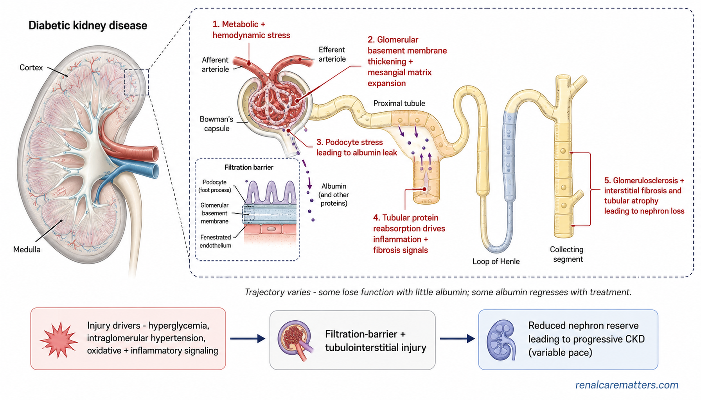
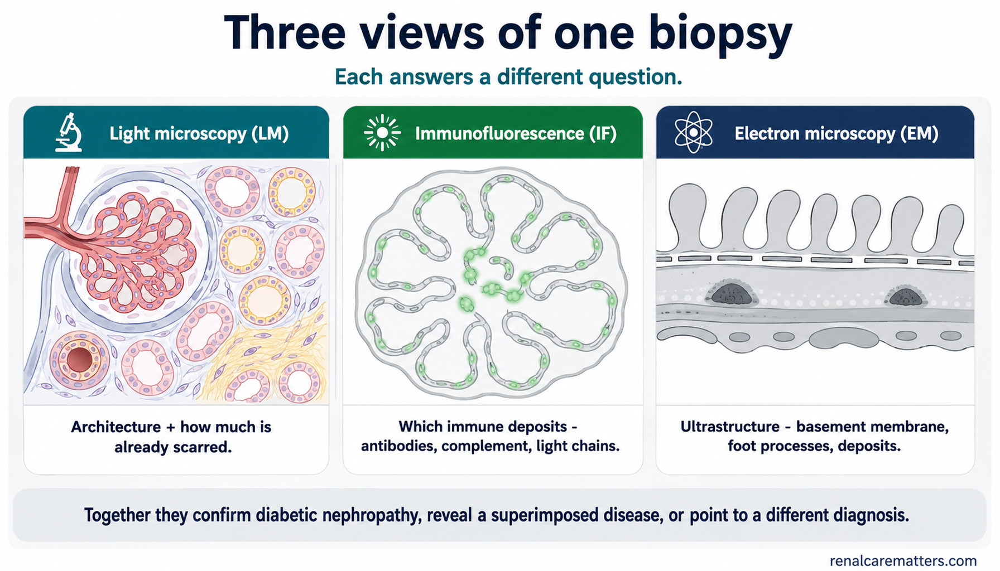

Five Things to RememberLimang Bagay na Dapat TandaanLima ka Butang nga HinumdomanLimang Bage a Dapat Tandan
Diabetes is one of the most common causes of chronic kidney disease (CKD), so when a person with diabetes develops a kidney problem, diabetic kidney disease (DKD) is a reasonable first thought. But a reasonable first thought is not the same as a proven cause. People with diabetes can also develop other kidney diseases — collectively called non-diabetic kidney disease (NDKD) — and sometimes the biopsy-proven diabetic lesion itself, called diabetic nephropathy (DN), sits alongside a second, separate process. This guide is about how nephrologists tell these possibilities apart, and what a large 2026 kidney-biopsy study can — and cannot — tell us.Ang diabetes ay isa sa pinakakaraniwang sanhi ng chronic kidney disease (CKD), kaya kapag ang isang taong may diabetes ay nagkaproblema sa bato, makatuwiran ang unang isipin ay diabetic kidney disease (DKD). Ngunit ang makatuwirang unang isip ay hindi katumbas ng napatunayang sanhi. Ang mga taong may diabetes ay maaari ring magkaroon ng ibang sakit sa bato — sama-samang tinatawag na non-diabetic kidney disease (NDKD) — at kung minsan ang napatunayang diabetic na pinsala mismo, tinatawag na diabetic nephropathy (DN), ay kasabay ng pangalawa at hiwalay na proseso. Ang gabay na ito ay tungkol sa kung paano pinag-iiba ng mga nephrologist ang mga posibilidad na ito, at kung ano ang masasabi — at hindi masasabi — ng isang malaking pag-aaral sa biopsy ng bato noong 2026.Ang diabetes usa sa labing komon nga hinungdan sa chronic kidney disease (CKD), mao nga kon ang tawong may diabetes magka-problema sa kidney, makatarunganon nga unang hunahunaon ang diabetic kidney disease (DKD). Apan ang makatarunganon nga unang hunahuna dili parehas sa napamatud-an nga hinungdan. Ang mga tawong may diabetes mahimo usab magbaton og laing sakit sa kidney — gitawag nga non-diabetic kidney disease (NDKD) — ug usahay ang napamatud-an nga diabetic nga kadaot mismo, gitawag nga diabetic nephropathy (DN), magkuyog sa ikaduha ug lahi nga proseso. Kining giyaha bahin sa kon giunsa pag-ila sa mga nephrologist kining mga posibilidad, ug kon unsa ang masulti — ug dili masulti — sa usa ka dakong pagtuon sa biopsy sa kidney niadtong 2026.Ing diabetes metung king pekamaraniwan a sangkan ning chronic kidney disease (CKD), inya nung ing taung atin diabetes magkasakit king batu, makatuliran ing mumunang isipan a diabetic kidney disease (DKD). Dapot ing makatuliran a mumunang isip ali katumbas ning apatunayan a sangkan. Deng taung atin diabetes malyaring magkasakit mu naman aliwang sakit king batu — auli a ausan non-diabetic kidney disease (NDKD) — at maminsan ing apatunayan a diabetic a pinsala mismu, ausan diabetic nephropathy (DN), kayabe ning kaduang, hiwalay a proseso. Ining gabay tungkul king makananu pipagdilan-dilan da reng nephrologist deng posibilidad a reni, at nanu ing malyaring sabian — at ali malyaring sabian — ning maragul a pag-aral king biopsy ning batu anyang 2026.
Five things to rememberLimang bagay na dapat tandaanLima ka butang nga hinumdomanLimang bage a dapat tandan
- Diabetes is a common cause of CKD, but it does not prove the cause in any single person.Ang diabetes ay karaniwang sanhi ng CKD, ngunit hindi nito napatutunayan ang sanhi sa iisang tao.Ang diabetes komon nga hinungdan sa CKD, apan dili niini mapamatud-an ang hinungdan sa usa ka tawo.Ing diabetes maraniwan a sangkan ning CKD, dapot ali na apatunayan ing sangkan king metung a tau.
- The tempo and pattern of kidney changes are often more informative than one laboratory value.Ang bilis at pattern ng pagbabago sa bato ay kadalasang mas nagbibigay-impormasyon kaysa sa isang halaga sa laboratoryo.Ang katulin ug pattern sa kausaban sa kidney kasagaran mas mahinungdanon kay sa usa ka bili sa laboratoryo.Ing bilis at pattern ning pamagbayu king batu maki-maraming pauli mas makabie impormasyon kesa king metung a halaga king laboratoryo.
- Sudden kidney injury, an active urine test, rapid decline, abrupt protein changes, and whole-body clues can justify looking for another cause.Ang biglaang pinsala sa bato, aktibong resulta sa ihi, mabilis na paghina, biglaang pagbabago sa protina, at mga palatandaan sa buong katawan ay maaaring maging dahilan para maghanap ng ibang sanhi.Ang kalit nga kadaot sa kidney, aktibo nga resulta sa ihi, paspas nga pag-us-os, kalit nga kausaban sa protina, ug tibuok-lawas nga timailhan mahimong hinungdan sa pagpangita og laing hinungdan.Ing biglang pinsala king batu, aktibu a resulta king mih, mabilis a pamagkinang, biglang pamagbayu king protina, at deng tanda king mabilug a katawan malyaring maging sangkan bang manintun aliwang sangkan.
- A kidney biopsy can show diabetic nephropathy, another disease, or both — but it is used when the expected information is worth the small procedural risk.Ang biopsy ng bato ay maaaring magpakita ng diabetic nephropathy, ibang sakit, o pareho — ngunit ginagamit ito kapag ang inaasahang impormasyon ay katumbas ng maliit na panganib ng pamamaraan.Ang biopsy sa kidney mahimong magpakita og diabetic nephropathy, laing sakit, o pareho — apan gigamit kini kon ang gilauman nga impormasyon takos sa gamay nga risgo sa pamaagi.Ing biopsy ning batu malyaring pakit ing diabetic nephropathy, aliwang sakit, o adua — dapot gagamitan ya nung ing inaasahan a impormasyon katumbas ning malating panganib ning pamaralan.
- The large 2026 biopsy study supports diagnostic vigilance; it does not mean that most people with diabetes have another kidney disease.Ang malaking pag-aaral sa biopsy noong 2026 ay sumusuporta sa pagbabantay sa diagnosis; hindi nito ibig sabihin na karamihan ng may diabetes ay may ibang sakit sa bato.Ang dakong pagtuon sa biopsy niadtong 2026 nagsuporta sa pagbantay sa diagnosis; wala kini nagpasabot nga kadaghanan sa may diabetes adunay laing sakit sa kidney.Ing maragul a pag-aral king biopsy anyang 2026 sasaup king pamagbante king diagnosis; ali na buri sabian a kalaknan da reng atin diabetes atin aliwang sakit king batu.
The right question is not simply, "Does this person have diabetes?" It is, "What best explains this kidney pattern?"Ang tamang tanong ay hindi basta, "May diabetes ba ang taong ito?" Ito ay, "Ano ang pinakamahusay na nagpapaliwanag sa pattern na ito ng bato?"Ang husto nga pangutana dili lang, "Naa bay diabetes kining tawhana?" Kondili, "Unsa ang labing maayong nagpasabot niining pattern sa kidney?"Ing tamang tanung ali mu, "Atin ne diabetes ining tau?" Nune, "Nanu ing pekamayap a magpaliwanag king pattern a ini ning batu?"
Having Diabetes Does Not Tell Us Exactly Why the Kidneys Are AbnormalAng Pagkakaroon ng Diabetes ay Hindi Nagsasabi kung Bakit Eksaktong May Problema ang BatoAng Pagbaton og Diabetes Wala Magsulti kon Nganong Eksakto nga Abnormal ang KidneyIng Pangatin Diabetes Ali Na Sasabian Nung Bakit Eksaktu a Atin Problema Ing Batu
When a routine test shows a lower estimated glomerular filtration rate (eGFR) — a number that estimates how well the kidneys filter — or a raised urine albumin-to-creatinine ratio (UACR) — a measure of protein leaking into the urine — in a person with diabetes, it is natural to attribute it to the diabetes. That attribution is often correct. But it is a hypothesis, not a fact. People with diabetes can acquire exactly the same glomerular, tubular, vascular, immune, infectious, drug-related, and antibody-related kidney diseases as anyone else. Diabetes and a second kidney problem can also coexist in the same kidney.Kapag ang isang karaniwang pagsusuri ay nagpakita ng mas mababang estimated glomerular filtration rate (eGFR) — bilang na tumatantiya kung gaano kahusay ang pagsala ng bato — o mataas na urine albumin-to-creatinine ratio (UACR) — sukat ng protinang tumatagas sa ihi — sa isang taong may diabetes, natural na iugnay ito sa diabetes. Kadalasang tama ang pag-uugnay na iyon. Ngunit ito ay isang hypothesis, hindi katotohanan. Ang mga taong may diabetes ay maaaring magkaroon ng eksaktong parehong glomerular, tubular, vascular, immune, nakakahawa, dulot ng gamot, at dulot ng antibody na sakit sa bato tulad ng iba. Ang diabetes at pangalawang problema sa bato ay maaari ring magsama sa iisang bato.Kon ang usa ka rutina nga pagsusi magpakita og mas ubos nga estimated glomerular filtration rate (eGFR) — numero nga nagbanabana kon unsa kaayo ang pagsala sa kidney — o taas nga urine albumin-to-creatinine ratio (UACR) — sukod sa protina nga nagtulo sa ihi — sa usa ka tawong may diabetes, natural nga i-atribyut kini sa diabetes. Kasagaran husto kadto nga pag-atribyut. Apan kini usa ka hypothesis, dili kamatuoran. Ang mga tawong may diabetes mahimong makakuha sa eksakto nga parehas nga glomerular, tubular, vascular, immune, makatakod, dulot sa tambal, ug dulot sa antibody nga sakit sa kidney sama sa uban. Ang diabetes ug ikaduha nga problema sa kidney mahimo usab magkuyog sa usa ka kidney.Nung ing metung a maraniwan a pamagsaliksik pakit ne ing mas mababa a estimated glomerular filtration rate (eGFR) — bilang a magtantiya nung makananu kayap ing pamagsala ning batu — o matas a urine albumin-to-creatinine ratio (UACR) — sukad ning protinang tatagas king mih — king taung atin diabetes, natural a iugne ya king diabetes. Maki-maraming pauli tama ing pang-ugne a ita. Dapot ini metung a hypothesis, ali katotohanan. Deng taung atin diabetes malyaring magkasakit king eksaktu a parehu a glomerular, tubular, vascular, immune, makikitalandi, dulut ning gamot, at dulut ning antibody a sakit king batu anti reng aliwa. Ing diabetes at kaduang problema king batu malyari mu naman a mikayabe king metung a batu.
Modern kidney-protective treatment has also blurred the old textbook picture. Diabetic kidney disease does not always follow the classic sequence of small amounts of albumin, then heavy protein, then falling filtration. Some people lose eGFR with little albumin in the urine; in others, albumin can even improve with treatment. Because the natural history is less stereotyped than it once was, the pattern in front of us — not the diabetes label alone — is what points to the cause. Even a sudden kidney injury (acute kidney injury, or AKI) in a person with diabetes has its own list of explanations, most of which have nothing to do with the diabetic lesion itself.Ang makabagong paggamot na pumoprotekta sa bato ay nagpalabo rin sa lumang larawan sa aklat. Ang diabetic kidney disease ay hindi laging sumusunod sa klasikong pagkakasunud-sunod ng kaunting albumin, tapos mabigat na protina, tapos bumababang filtration. May mga taong nawawalan ng eGFR na may kaunting albumin sa ihi; sa iba, maaari pang bumuti ang albumin sa paggamot. Dahil hindi na kasing-tipikal ng dati ang natural na takbo, ang pattern na nasa harap natin — hindi ang label ng diabetes lamang — ang tumuturo sa sanhi. Kahit ang biglaang pinsala sa bato (acute kidney injury, o AKI) sa isang may diabetes ay may sariling listahan ng mga paliwanag, na karamihan ay walang kinalaman sa diabetic na pinsala mismo.Ang moderno nga tambal nga nagpanalipod sa kidney nagpahanap usab sa daan nga hulagway sa libro. Ang diabetic kidney disease dili kanunay nagsunod sa klasiko nga han-ay sa gamay nga albumin, dayon bug-at nga protina, dayon nag-us-os nga filtration. Adunay mga tawong nawad-an og eGFR nga gamay ra ang albumin sa ihi; sa uban, mahimo pa gani mo-ayo ang albumin sa tambal. Tungod kay dili na kaayo tipiko ang natural nga dagan, ang pattern sa atong atubangan — dili ang label sa diabetes lamang — ang nagtudlo sa hinungdan. Bisan ang kalit nga kadaot sa kidney (acute kidney injury, o AKI) sa usa ka may diabetes adunay kaugalingong lista sa mga paagpasan, nga kadaghanan walay labot sa diabetic nga kadaot mismo.Ing makabayung lunas a magprotekta king batu megpalabu ya mu naman king lumang larawan king libru. Ing diabetic kidney disease ali pane tutuki king klasiku a pamagsunud-sunud ning kaute albumin, tempu mabayat a protina, tempu mananaba a filtration. Atin taung mangawala king eGFR a kaute albumin king mih; king aliwa, malyari pang gumaling ing albumin king lunas. Uling ali ne kasing-tipiku ning dati ing natural a dalan, ing pattern a atyu king arapan tamu — ali ing label ning diabetes mu — ing tuturu king sangkan. Maski ing biglang pinsala king batu (acute kidney injury, o AKI) king metung a atin diabetes atin ne sarili a listahan da reng paliwanag, a kalaknan ala nong kaugnayan king diabetic a pinsala mismu.
A diagnosis should explain the pattern, the trajectory, and the contextDapat ipaliwanag ng diagnosis ang pattern, ang takbo, at ang kontekstoKinahanglan ipasabot sa diagnosis ang pattern, ang dagan, ug ang kontekstoDapat ipaliwanag ning diagnosis ing pattern, ing dalan, at ing konteksto
A good diagnosis fits three things at once: what the tests show, how fast they are changing, and the person's whole clinical story. When all three fit diabetes, treating for diabetic kidney disease is sound. When one of them does not fit, that mismatch is worth a second look.Ang magandang diagnosis ay tumutugma sa tatlong bagay nang sabay: kung ano ang ipinapakita ng mga pagsusuri, gaano kabilis ang pagbabago, at ang buong kuwentong klinikal ng tao. Kapag ang lahat ng tatlo ay tumutugma sa diabetes, tama ang paggamot para sa diabetic kidney disease. Kapag ang isa sa mga ito ay hindi tumutugma, ang hindi pagtutugmang iyon ay karapat-dapat sa pangalawang tingin.Ang maayong diagnosis mohaum sa tulo ka butang dungan: unsa ang gipakita sa mga pagsusi, unsa kapaspas kini nagbag-o, ug ang tibuok klinikal nga sugilanon sa tawo. Kon ang tanang tulo mohaum sa diabetes, husto ang pagtambal alang sa diabetic kidney disease. Kon usa niini dili mohaum, kadto nga dili pagkahaum takos sa ikaduha nga pagtan-aw.Ing mayap a diagnosis tutugma ya king atlung bage a sabay: nanu ing pakit da reng pamagsaliksik, makananu bilis ing pamagbayu, at ing mabilug a kwentu klinikal ning tau. Nung ing anggang atlu tutugma king diabetes, tama ing lunas para king diabetic kidney disease. Nung ing metung karela ali tutugma, ing ali pang-tugma a ita karapat-dapat king kaduang lawe.
What Diabetic Kidney Disease Is Actually DoingAno ang Talagang Ginagawa ng Diabetic Kidney DiseaseUnsa Gyud ang Gibuhat sa Diabetic Kidney DiseaseNanu ing Talagang Daraptan ning Diabetic Kidney Disease
To recognize when a kidney pattern does not fit diabetes, it helps to know what diabetes usually does to the kidney. The injury unfolds in stages, but — and this matters — it does not always move in a straight line, and not everyone passes through every stage in the same order.Para makilala kung kailan ang isang pattern ng bato ay hindi tumutugma sa diabetes, nakatutulong malaman kung ano ang karaniwang ginagawa ng diabetes sa bato. Ang pinsala ay nabubuo sa mga yugto, ngunit — at mahalaga ito — hindi ito laging gumagalaw sa tuwid na linya, at hindi lahat ay dumadaan sa bawat yugto sa parehong pagkakasunud-sunod.Aron mailhan kon kanus-a ang usa ka pattern sa kidney dili mohaum sa diabetes, makatabang nga mahibaloan kon unsa kasagaran ang gibuhat sa diabetes sa kidney. Ang kadaot mahitabo sa mga yugto, apan — ug importante kini — dili kini kanunay molihok sa tul-id nga linya, ug dili tanan moagi sa matag yugto sa parehas nga han-ay.Bang akilala nung kapilan ing metung a pattern ning batu ali tutugma king diabetes, makasaup a abalu nung nanu ing maraniwan a daraptan ning diabetes king batu. Ing pinsala mibubu ya king mga yugtu, dapot — at mahalaga ini — ali ya pane gagalo king matulid a guhit, at ali ngan dumalan king balang yugtu king parehu a pamagsunud-sunud.

Two honest exceptions to the textbookDalawang tapat na eksepsiyon sa aklatDuha ka tinuod nga eksepsiyon sa libroAduang tapat a eksepsiyon king libru
First, some people with diabetes lose filtration with very little albumin in the urine, so a "normal" urine protein does not rule out diabetic kidney disease. Second, the absence of diabetic eye disease (retinopathy) does not prove the kidney disease is not diabetic — this clue is more useful in type 1 diabetes than type 2. Neither heavy protein nor progressive scarring, by itself, is proof of another disease; both happen in ordinary diabetic nephropathy too.Una, may mga taong may diabetes na nawawalan ng filtration na napakaliit ng albumin sa ihi, kaya ang "normal" na protina sa ihi ay hindi nag-aalis ng diabetic kidney disease. Pangalawa, ang kawalan ng diabetic na sakit sa mata (retinopathy) ay hindi nagpapatunay na hindi diabetic ang sakit sa bato — mas kapaki-pakinabang ang palatandaang ito sa type 1 diabetes kaysa type 2. Ni ang mabigat na protina o ang lumalalang peklat, mag-isa, ay hindi patunay ng ibang sakit; parehong nangyayari sa karaniwang diabetic nephropathy.Una, adunay mga tawong may diabetes nga nawad-an og filtration nga gamay ra kaayo ang albumin sa ihi, mao nga ang "normal" nga protina sa ihi wala magwagtang sa diabetic kidney disease. Ikaduha, ang kawalay diabetic nga sakit sa mata (retinopathy) wala magpamatuod nga dili diabetic ang sakit sa kidney — mas mapuslanon kining timailhan sa type 1 diabetes kay sa type 2. Bisan ang bug-at nga protina o ang nagkagrabe nga peklat, mag-inusara, dili pamatuod sa laing sakit; parehas nga mahitabo sa ordinaryo nga diabetic nephropathy.Mumuna, atin taung atin diabetes a mangawala king filtration a alang-alang albumin king mih, inya ing "normal" a protina king mih ali na iyayalis ing diabetic kidney disease. Kaduang, ing kawala ning diabetic a sakit king mata (retinopathy) ali na papatunayan a ali diabetic ing sakit king batu — mas makabie saup ining tanda king type 1 diabetes kesa type 2. Ni ing mabayat a protina o ing lumalalang peklat, sarili, ali ne patunay ning aliwang sakit; parehu lang mananyaya king maraniwan a diabetic nephropathy.
The Kidney Can Tell Three Different StoriesTatlong Magkakaibang Kuwento ang Maaaring Sabihin ng BatoTulo ka Lahi nga Sugilanon ang Mahimong Isulti sa KidneyAtlung Miyayaliwang Kwentu ing Malyaring Sabian ning Batu
When a nephrologist examines a small sample of kidney tissue under the microscope, the result generally falls into one of three patterns. Keeping these three possibilities in mind is the heart of good diagnostic reasoning.Kapag sinuri ng isang nephrologist ang maliit na sampol ng tisyu ng bato sa ilalim ng mikroskopyo, ang resulta ay karaniwang nahuhulog sa isa sa tatlong pattern. Ang pagtatago ng tatlong posibilidad na ito sa isip ang puso ng mahusay na diagnostic reasoning.Kon susihon sa usa ka nephrologist ang gamay nga sample sa tisyu sa kidney ilalom sa mikroskopyo, ang resulta kasagaran mahulog sa usa sa tulo ka pattern. Ang pagbaton niini nga tulo ka posibilidad sa hunahuna mao ang kasingkasing sa maayong diagnostic reasoning.Nung sinuri ning metung a nephrologist ing malating sample ning tisyu ning batu king lalam ning mikroskopyo, ing resulta maki-maraming mahulog king metung karing atlung pattern. Ing pamagtagu karing atlung posibilidad king isip ing pusu ning mayap a diagnostic reasoning.
Diabetic nephropathy aloneDiabetic nephropathy lamangDiabetic nephropathy langDiabetic nephropathy mu
The diabetic lesions explain the whole picture. No separate disease is found.Ipinapaliwanag ng diabetic na pinsala ang buong larawan. Walang hiwalay na sakit na nakita.Ang diabetic nga kadaot nagpasabot sa tibuok hulagway. Walay lahi nga sakit nga nakita.Ipaliwanag ning diabetic a pinsala ing mabilug a larawan. Alang hiwalay a sakit a ikit.
Diabetic nephropathy plus another diseaseDiabetic nephropathy at ibang sakitDiabetic nephropathy ug laing sakitDiabetic nephropathy at aliwang sakit
Diabetic injury is present, but a second, superimposed process sits on top of it and may change treatment.May diabetic na pinsala, ngunit may pangalawang prosesong nakapatong dito na maaaring magbago ng paggamot.Anaay diabetic nga kadaot, apan adunay ikaduha nga proseso nga nagtabon niini nga mahimong mag-usab sa tambal.Atin diabetic a pinsala, dapot atin kaduang proseso a nakapatung kaniti a malyaring magbayu king lunas.
Another disease, without diabetic nephropathyIbang sakit, walang diabetic nephropathyLaing sakit, walay diabetic nephropathyAliwang sakit, alang diabetic nephropathy
The person has diabetes, but the sampled tissue does not show diabetic nephropathy as the explanation.May diabetes ang tao, ngunit ang tisyu ay hindi nagpapakita ng diabetic nephropathy bilang paliwanag.Adunay diabetes ang tawo, apan ang tisyu wala magpakita og diabetic nephropathy isip pagpasabot.Atin diabetes ing tau, dapot ing tisyu ali na pakit ing diabetic nephropathy bilang paliwanag.
What a biopsy is — and is notAno ang biopsy — at hindiUnsa ang biopsy — ug diliNanu ing biopsy — at ali
A biopsy samples a tiny piece of tissue. Its interpretation depends on getting enough tissue and on combining three views of that tissue with the person's clinical picture. It answers a question; it does not hand over a certainty in every case.Ang biopsy ay kumukuha ng maliit na piraso ng tisyu. Ang interpretasyon nito ay nakadepende sa pagkuha ng sapat na tisyu at sa pagsasama ng tatlong pananaw ng tisyung iyon sa klinikal na larawan ng tao. Sumasagot ito ng tanong; hindi ito nagbibigay ng katiyakan sa bawat kaso.Ang biopsy nagkuha og gamay nga piraso sa tisyu. Ang interpretasyon niini nagdepende sa pagkuha og igo nga tisyu ug sa pagtapok sa tulo ka panan-aw niini nga tisyu sa klinikal nga hulagway sa tawo. Nagtubag kini og pangutana; wala kini naghatag og kasigurohan sa matag kaso.Ing biopsy kukua yang malating piraso ning tisyu. Ing interpretasyon na dependi king pangakua sapat a tisyu at king pamagsanib atlung lawe ning tisyu king klinikal a larawan ning tau. Makibat yang tanung; ali na bibie katiyakan king balang kaso.
What Changed in 2026: the Largest Biopsy Cohort YetAno ang Nagbago noong 2026: ang Pinakamalaking Biopsy CohortUnsa ang Nabag-o niadtong 2026: ang Pinakadako nga Biopsy CohortNanu ing Mibayu Anyang 2026: ing Pekamaragul a Biopsy Cohort
In 2026, Caza and colleagues published, in the journal Kidney International, the largest study of its kind: a review of kidney-biopsy tissue from people with diabetes, read at a single United States pathology laboratory over more than two decades. Out of about 229,000 native kidney biopsies in the source database, roughly 78,900 came from people with diabetes, and 49,075 met the study's quality bar (at least ten filtering units, or glomeruli, visible under the microscope). Some results were linked to the United States Renal Data System (USRDS) to follow kidney outcomes over time.Noong 2026, inilathala nina Caza at mga kasamahan, sa journal na Kidney International, ang pinakamalaking pag-aaral ng ganitong uri: isang pagsusuri ng tisyu ng biopsy ng bato mula sa mga taong may diabetes, binasa sa iisang laboratoryo ng pathology sa Estados Unidos sa loob ng mahigit dalawang dekada. Sa mga 229,000 na native kidney biopsy sa database, humigit-kumulang 78,900 ang galing sa mga taong may diabetes, at 49,075 ang umabot sa pamantayan ng kalidad ng pag-aaral (hindi bababa sa sampung yunit ng pagsala, o glomeruli, na nakikita sa mikroskopyo). Ang ilang resulta ay iniugnay sa United States Renal Data System (USRDS) para masundan ang mga kalalabasan sa bato.Niadtong 2026, gipatik ni Caza ug mga kauban, sa journal nga Kidney International, ang pinakadako nga pagtuon niini nga matang: usa ka pagsusi sa tisyu sa biopsy sa kidney gikan sa mga tawong may diabetes, gibasa sa usa ka laboratoryo sa pathology sa Estados Unidos sulod sa kapin duha ka dekada. Sa mga 229,000 ka native kidney biopsy sa database, mga 78,900 ang gikan sa mga tawong may diabetes, ug 49,075 ang niabot sa sukdanan sa kalidad sa pagtuon (labing menos napulo ka yunit sa pagsala, o glomeruli, makita sa mikroskopyo). Ang pipila ka resulta gilink sa United States Renal Data System (USRDS) aron sundon ang mga resulta sa kidney.Anyang 2026, pepalwal nda Caza at reng kayabe, king journal a Kidney International, ing pekamaragul a pag-aral ning anti kaniti: metung a pamagsuri king tisyu ning biopsy ning batu manibat karing taung atin diabetes, binasa king metung a laboratoryo ning pathology king Estados Unidos king kabilugan ning mas maragul kesa aduang dekada. Karing mga 229,000 a native kidney biopsy king database, manga 78,900 ing menibat karing taung atin diabetes, at 49,075 ing miras king pamantayan ning kalidad ning pag-aral (ali mababa king apulung yunit ning pamagsala, o glomeruli, akit king mikroskopyo). Deng aliwang resulta miugne king United States Renal Data System (USRDS) bang matuki deng kalabsan king batu.
Among these selected, biopsied patients with diabetes, the tissue fell into the three stories almost evenly:Sa mga napiling, na-biopsy na pasyenteng may diabetes, ang tisyu ay nahulog sa tatlong kuwento nang halos pantay:Sa mga napili, na-biopsy nga pasyente nga may diabetes, ang tisyu nahulog sa tulo ka sugilanon halos patas:Karing mepiling, mibiopsy a pasyenteng atin diabetes, ing tisyu mihulog king atlung kwentu a halos pante:
Do not read 58.8% as a population prevalenceHuwag basahin ang 58.8% bilang prevalence ng populasyonAyaw basaha ang 58.8% isip prevalence sa populasyonE mo babasan ing 58.8% bilang prevalence ning populasyon
These 49,075 people were not a random sample of everyone living with diabetes. They had already been chosen for a kidney biopsy — usually because a clinician suspected tissue might answer an important question. The study is highly informative about what biopsies uncover in selected patients. It cannot tell us that 58.8% of all people with diabetes, or even 58.8% of all people with diabetes and CKD, have a non-diabetic kidney disease.Ang 49,075 na taong ito ay hindi random na sampol ng lahat ng may diabetes. Napili na sila para sa biopsy ng bato — kadalasan dahil pinaghihinalaan ng doktor na maaaring makasagot ang tisyu sa mahalagang tanong. Napakainpormatibo ng pag-aaral tungkol sa kung ano ang natutuklasan ng biopsy sa napiling pasyente. Hindi nito masasabi na 58.8% ng lahat ng may diabetes, o kahit 58.8% ng lahat ng may diabetes at CKD, ay may non-diabetic kidney disease.Kining 49,075 ka tawo dili random nga sample sa tanang may diabetes. Napili na sila alang sa biopsy sa kidney — kasagaran tungod kay ang kliniko nagduda nga ang tisyu makatubag sa importante nga pangutana. Ang pagtuon mahinungdanon kaayo bahin sa unsa ang makita sa biopsy sa napili nga pasyente. Dili niini masulti nga 58.8% sa tanang may diabetes, o bisan 58.8% sa tanang may diabetes ug CKD, adunay non-diabetic kidney disease.Ding 49,075 a taung reni ali random a sample da reng anggang atin diabetes. Mepili no para king biopsy ning batu — maki-maraming uling pipagdudan ning doktor a malyaring makibat ing tisyu king mahalagang tanung. Makabie impormasyon ing pag-aral tungkul king nanu ing atukian ning biopsy karing mepiling pasyente. Ali na malyaring sabian a 58.8% da reng anggang atin diabetes, o maski 58.8% da reng anggang atin diabetes at CKD, atin non-diabetic kidney disease.
"Non-diabetic kidney disease" is a wide umbrella — and it includes acute tubular injuryAng "non-diabetic kidney disease" ay malawak na payong — kasama ang acute tubular injuryAng "non-diabetic kidney disease" halapad nga payong — apil ang acute tubular injuryIng "non-diabetic kidney disease" malapad a payung — kayabe ing acute tubular injury
The NDKD label in this study included acute tubular injury (ATI) — a common, often reversible bruising of the kidney's tubules from low blood flow, illness, or medications. ATI was especially frequent as the second diagnosis in kidneys that also had diabetic nephropathy. So the 58.8% should not be translated into "nearly six in ten had a completely separate, chronic glomerular disease." Many of those second diagnoses were acute, treatable events rather than new lifelong kidney diseases.Ang NDKD na label sa pag-aaral na ito ay kasama ang acute tubular injury (ATI) — karaniwan, kadalasang nababaligtad na pinsala sa tubule ng bato dahil sa mababang daloy ng dugo, sakit, o gamot. Madalas ang ATI bilang pangalawang diagnosis sa mga batong may diabetic nephropathy din. Kaya ang 58.8% ay hindi dapat isalin sa "halos anim sa sampu ay may ganap na hiwalay, kronikong sakit sa glomerulus." Marami sa mga pangalawang diagnosis ay akut, nagagamot na pangyayari sa halip na bagong panghabambuhay na sakit sa bato.Ang NDKD nga label niini nga pagtuon nag-apil sa acute tubular injury (ATI) — komon, kasagaran mabalik nga samad sa tubule sa kidney gikan sa ubos nga dagan sa dugo, sakit, o tambal. Ang ATI kasagaran isip ikaduha nga diagnosis sa mga kidney nga adunay diabetic nephropathy usab. Mao nga ang 58.8% dili angay hubaron nga "halos unom sa napulo adunay bug-os nga lahi, kronik nga sakit sa glomerulus." Daghan niadtong ikaduha nga diagnosis akut, matambalan nga panghitabo dili bag-o nga panghabuhi nga sakit sa kidney.Ing NDKD a label king pag-aral a ini kayabe ing acute tubular injury (ATI) — maraniwan, maki-maraming mibalik a pinsala king tubule ning batu dulut ning mababang daloy ning daya, sakit, o gamot. Maki-maraming ATI bilang kaduang diagnosis karing batung atin diabetic nephropathy mu naman. Inya ing 58.8% ali dapat isalin king "halos anam king apulu atin ganap a hiwalay, kroniku a sakit king glomerulus." Dakal karing kaduang diagnosis akut, agyung lunasan a mananyaya imbes bayung panghabambuhay a sakit king batu.
One more histologic pattern is worth knowing, because it guards against over-reading the number. The more advanced the diabetic scarring already was, the less often a second diagnosis appeared: a second process was found in roughly half of biopsies with early diabetic changes (graded by the Renal Pathology Society, or RPS, as class I–II), but in only about 10% of kidneys where three-quarters or more of the filters were already globally scarred. In other words, the extra diagnoses cluster in less-scarred kidneys — a finding that only exists after tissue is examined, and is not a rule for deciding who to biopsy.May isa pang histologic pattern na dapat malaman, dahil pinipigilan nito ang labis na pagbasa ng numero. Kung mas malala na ang diabetic na peklat, mas bihira lumitaw ang pangalawang diagnosis: nakita ang pangalawang proseso sa halos kalahati ng biopsy na may maagang diabetic na pagbabago (na-grade ng Renal Pathology Society, o RPS, bilang class I–II), ngunit sa mga 10% lamang ng batong ang tatlong-kapat o higit pa ng mga filter ay peklat na. Sa madaling salita, ang mga dagdag na diagnosis ay nasa mga batong may kaunting peklat — isang natuklasan na umiiral pagkatapos masuri ang tisyu, at hindi patakaran kung sino ang bibiyopsyin.Adunay usa pa ka histologic pattern nga angay mahibaloan, kay nagpugong kini sa sobra nga pagbasa sa numero. Kon mas grabe na ang diabetic nga peklat, mas panagsa motungha ang ikaduha nga diagnosis: nakita ang ikaduha nga proseso sa halos katunga sa biopsy nga may sayo nga diabetic nga kausaban (gi-grade sa Renal Pathology Society, o RPS, isip class I–II), apan sa mga 10% lang sa kidney diin tulo-ka-upat o kapin ang na-peklat na. Sa laktod, ang dugang nga diagnosis nagpundok sa mga kidney nga gamay ang peklat — usa ka nakita nga anaa lang human masusi ang tisyu, ug dili lagda kon kinsa ang biopsyhon.Atin metung pang histologic pattern a dapat abalu, uling pipigilan na ing sobra a pamagbasa king numeru. Nung mas malala ne ing diabetic a peklat, mas bihira lumitaw ing kaduang diagnosis: ikit ing kaduang proseso king halos kapitna ning biopsy a atin maagang diabetic a pamagbayu (mi-grade ning Renal Pathology Society, o RPS, bilang class I–II), dapot king manga 10% mu da reng batung nung nu ing atlung-kapat o mas dakal karing filter mipeklat na. King malagwang amanu, deng dagdag a diagnosis mipundu karing batung kaute peklat — metung a ikit a atyu mu kaibat asuri ing tisyu, at ali patakaran nung ninu ing biopsyan.
The Pattern Mattered More Than the Diabetes LabelMas Mahalaga ang Pattern Kaysa sa Label na DiabetesMas Importante ang Pattern Kay sa Label nga DiabetesMas Mahalaga ing Pattern Kesa king Label a Diabetes
The most useful part of the study looked at why each biopsy was done. Within a group of 13,995 patients who all had biopsy-proven diabetic nephropathy and a recorded reason for biopsy, the chance of also finding a second diagnosis varied enormously by the clinical presentation. The bars below show the share with a second diagnosis for each reason; the odds ratio (OR) compares one presentation against the others within this already-biopsied group — it is not a personal risk. Small groups are marked, because a few dozen biopsies cannot carry a precise percentage.Ang pinakakapaki-pakinabang na bahagi ng pag-aaral ay tumingin sa bakit ginawa ang bawat biopsy. Sa loob ng grupo ng 13,995 pasyenteng lahat ay may napatunayang diabetic nephropathy at may naitalang dahilan ng biopsy, ang tsansang makahanap din ng pangalawang diagnosis ay malaki ang pagkakaiba ayon sa klinikal na presentasyon. Ipinapakita ng mga bar sa ibaba ang bahaging may pangalawang diagnosis para sa bawat dahilan; ang odds ratio (OR) ay naghahambing ng isang presentasyon sa iba sa loob ng grupong ito na na-biopsy na — hindi ito personal na panganib. Minarkahan ang maliliit na grupo, dahil ang ilang dosenang biopsy ay hindi makakapagdala ng tumpak na porsyento.Ang labing mapuslanon nga bahin sa pagtuon nagtan-aw sa nganong gihimo ang matag biopsy. Sulod sa grupo sa 13,995 ka pasyente nga tanan adunay napamatud-an nga diabetic nephropathy ug narekord nga hinungdan sa biopsy, ang kahigayonan sa pagpangita usab og ikaduha nga diagnosis nagkalainlain pag-ayo sumala sa klinikal nga presentasyon. Ang mga bar sa ubos nagpakita sa bahin nga may ikaduha nga diagnosis alang sa matag hinungdan; ang odds ratio (OR) nagtandi sa usa ka presentasyon sa uban sulod niini nga gi-biopsy na nga grupo — dili kini personal nga risgo. Gimarkahan ang gagmay nga grupo.Ing pekamakabie saup a dake ning pag-aral linawe king bakit mireng balang biopsy. King kilub ning grupu da reng 13,995 a pasyenteng anggan atin apatunayan a diabetic nephropathy at atin naitalang sangkan ning biopsy, ing tsansang makayakit mu naman kaduang diagnosis maragul ing kilaian agpang king klinikal a presentasyon. Pakit da reng bar king lalam ing dake a atin kaduang diagnosis para king balang sangkan; ing odds ratio (OR) ihahambing na ing metung a presentasyon karing aliwa king kilub ning grupung mibiopsy na — ali ini personal a panganib.
| Reason for biopsyDahilan ng biopsyHinungdan sa biopsySangkan ning biopsy | N | 2nd dx found2nd dx nakita2nd dx nakita2nd dx ikit | OR (95% CI) |
|---|---|---|---|
| Acute nephritic syndromeAcute nephritic syndromeAcute nephritic syndromeAcute nephritic syndrome | 187 | 59% | 4.01 (2.99–5.38) |
| Rapidly progressive renal failureMabilis na paglala ng batoPaspas nga paglala sa kidneyMabilis a paglala ning batu | 122 | 47% | 2.38 (1.66–3.40) |
| Acute kidney injuryAcute kidney injuryAcute kidney injuryAcute kidney injury | 6,366 | 39% | 3.01 (2.79–3.26) |
| HematuriaHematuriaHematuriaHematuria | 86 | 37% | 1.60 (1.03–2.48) |
| Suspected NDKDPinaghihinalaang NDKDGidudahang NDKDPipagdudan a NDKD | 402 | 21% | 0.71 (0.56–0.91) |
| Protein greater than expected for DNProtina na higit sa inaasahan sa DNProtina nga labaw sa gilauman sa DNProtina a mas king inaasahan king DN | 5,618 | 17% | 0.39 (0.36–0.42) |
| Progressive CKDProgressive CKDProgressive CKDProgressive CKD | 1,214 | 9% | 0.23 (0.19–0.29) |
How to read this table honestlyPaano basahin nang tapat ang tsart na itoUnsaon pagbasa nga matinud-anon niini nga lamesaMakananu basan a tapat ining tsart
"Protein greater than expected" means the protein was judged to be much heavier than diabetic nephropathy alone should cause — not simply "protein in the urine," which is expected in diabetic nephropathy. And the low 9% figure for progressive CKD does not mean biopsy is useless there: even when a second disease is uncommon, a biopsy can still confirm the diagnosis, grade the scarring, or rule out a feared alternative. These numbers describe a selected biopsy population; they are not a bedside score you can add up for yourself.Ang "protina na higit sa inaasahan" ay nangangahulugang ang protina ay hinatulang mas mabigat kaysa sa dapat sanhiin ng diabetic nephropathy lamang — hindi basta "protina sa ihi," na inaasahan sa diabetic nephropathy. At ang mababang 9% para sa progressive CKD ay hindi nangangahulugang walang silbi ang biopsy doon: kahit bihira ang pangalawang sakit, maaari pa ring kumpirmahin ng biopsy ang diagnosis, i-grade ang peklat, o iwaksi ang kinatatakutang alternatibo. Ang mga numerong ito ay para sa napiling populasyon ng biopsy; hindi ito iskor na maaari mong idagdag para sa sarili.Ang "protina nga labaw sa gilauman" nagpasabot nga ang protina gihukman nga mas bug-at kay sa angay ipahinabo sa diabetic nephropathy lamang — dili lang "protina sa ihi," nga gilauman sa diabetic nephropathy. Ug ang ubos nga 9% alang sa progressive CKD wala magpasabot nga walay pulos ang biopsy didto: bisan panagsa ang ikaduha nga sakit, ang biopsy makapamatuod gihapon sa diagnosis, mo-grade sa peklat, o mowagtang sa gikahadlokan nga alternatibo. Kini nga mga numero alang sa napili nga populasyon sa biopsy.Ing "protina a mas king inaasahan" buri sabian a ing protina mihatulan a mas mabayat kesa king dapat sangkanan ning diabetic nephropathy mu — ali mu "protina king mih," a inaasahan king diabetic nephropathy. At ing mababang 9% para king progressive CKD ali buri sabian a alang silbi ing biopsy karin: maski bihira ing kaduang sakit, malyari pa mung kumpirman ning biopsy ing diagnosis, i-grade ing peklat, o iyalis ing tatakutan a alternatibo.
"Not Diabetic Nephropathy" Is Not One DiseaseAng "Hindi Diabetic Nephropathy" ay Hindi Iisang SakitAng "Dili Diabetic Nephropathy" Dili Usa ka SakitIng "Ali Diabetic Nephropathy" Ali Metung a Sakit
Non-diabetic kidney disease is an umbrella term, not a single treatable diagnosis. The diseases found under it fall into a few broad mechanisms — and each demands different questions and sometimes different treatments. Grouping them this way is more useful than a long alphabetical list.Ang non-diabetic kidney disease ay isang payong na termino, hindi iisang nagagamot na diagnosis. Ang mga sakit na nakita rito ay nahuhulog sa ilang malawak na mekanismo — at bawat isa ay nangangailangan ng ibang tanong at kung minsan ibang paggamot. Ang pagpapangkat sa ganitong paraan ay mas kapaki-pakinabang kaysa sa mahabang listahan.Ang non-diabetic kidney disease usa ka payong nga termino, dili usa ka matambalan nga diagnosis. Ang mga sakit nga nakita niini nahulog sa pipila ka lapad nga mekanismo — ug ang matag usa nagkinahanglan og lahi nga pangutana ug usahay lahi nga tambal. Ang paghan-ay niini niini nga paagi mas mapuslanon kay sa taas nga lista.Ing non-diabetic kidney disease metung a payung a termino, ali metung a agyung lunasan a diagnosis. Deng sakit a ikit kaniti mihulog king aliwang malapad a mekanismo — at balang metung mangailangan aliwang tanung at maminsan aliwang lunas. Ing pamagpangkat king anti kaniti mas makabie saup kesa king makabang listahan.
Acute tubular / interstitial injuryAcute tubular / interstitial na pinsalaAcute tubular / interstitial nga samadAcute tubular / interstitial a pinsala
Acute tubular injury (ATI); acute interstitial nephritis (AIN, often drug-triggered); crystal- or cast-related injury. Often acute and potentially reversible.Acute tubular injury (ATI); acute interstitial nephritis (AIN, madalas dulot ng gamot); crystal- o cast-related na pinsala. Madalas akut at maaaring mabaligtad.Acute tubular injury (ATI); acute interstitial nephritis (AIN, kasagaran dulot sa tambal); crystal- o cast-related nga samad. Kasagaran akut ug mahimong mabalik.Acute tubular injury (ATI); acute interstitial nephritis (AIN, maki-maraming dulut ning gamot); crystal- o cast-related a pinsala. Maki-maraming akut at malyaring mibalik.
Immune / glomerular diseaseImmune / glomerular na sakitImmune / glomerular nga sakitImmune / glomerular a sakit
Inflammation of the filters, or glomerulonephritis (GN): IgA nephropathy (IgAN), infection-associated GN, crescentic or necrotizing GN, membranoproliferative patterns, lupus nephritis, and membranous disease.Pamamaga ng mga filter, o glomerulonephritis (GN): IgA nephropathy (IgAN), infection-associated GN, crescentic o necrotizing GN, membranoproliferative pattern, lupus nephritis, at membranous disease.Hubag sa mga filter, o glomerulonephritis (GN): IgA nephropathy (IgAN), infection-associated GN, crescentic o necrotizing GN, membranoproliferative pattern, lupus nephritis, ug membranous disease.Pamamaga da reng filter, o glomerulonephritis (GN): IgA nephropathy (IgAN), infection-associated GN, crescentic o necrotizing GN, membranoproliferative pattern, lupus nephritis, at membranous disease.
Monoclonal / deposition diseaseMonoclonal / deposition na sakitMonoclonal / deposition nga sakitMonoclonal / deposition a sakit
Abnormal antibody proteins depositing in the kidney: amyloidosis, and light-chain or other conditions linked to a monoclonal gammopathy (an overgrowth of one antibody-making cell line).Abnormal na antibody na protinang naiipon sa bato: amyloidosis, at light-chain o iba pang kondisyong nauugnay sa monoclonal gammopathy (labis na paglago ng isang linya ng cell na gumagawa ng antibody).Abnormal nga antibody nga protina nga nagtapok sa kidney: amyloidosis, ug light-chain o uban nga kondisyon nga may kalabotan sa monoclonal gammopathy (sobra nga pagtubo sa usa ka linya sa cell nga naghimo og antibody).Abnormal a antibody a protina a mitipun king batu: amyloidosis, at light-chain o aliwang kondisyon a mikakabit king monoclonal gammopathy (sobra a pamagtubu ning metung a linya ning cell a gagawa antibody).
Vascular / otherVascular / iba paVascular / uban paVascular / aliwa pa
Blood-vessel processes: hardening of the kidney's small arteries (arterionephrosclerosis), cholesterol-embolic injury, cortical infarction, and other less common entities.Proseso ng daluyan ng dugo: pagtigas ng maliliit na arterya ng bato (arterionephrosclerosis), cholesterol-embolic na pinsala, cortical infarction, at iba pang di-gaanong karaniwang entidad.Proseso sa ugat sa dugo: pagtig-a sa gagmay nga arterya sa kidney (arterionephrosclerosis), cholesterol-embolic nga samad, cortical infarction, ug uban nga dili kaayo komon nga entidad.Proseso ning daluyan ning daya: pamagtigas da reng malating arterya ning batu (arterionephrosclerosis), cholesterol-embolic a pinsala, cortical infarction, at aliwang ali masiadung maraniwan a entidad.
Why the umbrella is misleading if read looselyBakit nakakalito ang payong kung basta babasahinNganong makapahisalaag ang payong kon basta basahonBakit makalinu ing payung nung basta babasan
Among the kidneys that had both diabetic nephropathy and a second diagnosis, ATI was by far the most common partner — 7,288 of 11,242 such cases, about 65%. That single fact is why any picture of the 58.8% must not suggest that most of those people had a separate, chronic glomerular disease. "Non-diabetic" here often meant a temporary, treatable insult layered on top of the diabetic kidney.Sa mga batong may parehong diabetic nephropathy at pangalawang diagnosis, ang ATI ang pinakakaraniwang kasama — 7,288 sa 11,242 na kaso, mga 65%. Iyon ang dahilan kung bakit ang anumang larawan ng 58.8% ay hindi dapat magmungkahi na karamihan sa mga taong iyon ay may hiwalay, kronikong sakit sa glomerulus. Ang "non-diabetic" dito ay kadalasang nangangahulugan ng pansamantala, nagagamot na pinsalang nakapatong sa diabetic na bato.Sa mga kidney nga adunay parehas nga diabetic nephropathy ug ikaduha nga diagnosis, ang ATI ang labing komon nga kauban — 7,288 sa 11,242 ka kaso, mga 65%. Kadto nga usa ka kamatuoran mao ang hinungdan nga bisan unsang hulagway sa 58.8% dili angay magsugyot nga kadaghanan niadtong mga tawo adunay lahi, kronik nga sakit sa glomerulus. Ang "non-diabetic" dinhi kasagaran nagpasabot og temporaryo, matambalan nga samad nga gitapon sa diabetic nga kidney.Karing batung atin parehu a diabetic nephropathy at kaduang diagnosis, ing ATI ing pekamaraniwan a kayabe — 7,288 karing 11,242 a kaso, manga 65%. Ita ing sangkan bakit ninu mang larawan ning 58.8% ali dapat magmungkahi a kalaknan karing taung ita atin hiwalay, kroniku a sakit king glomerulus. Ing "non-diabetic" keni maki-maraming buri sabian a pansamantala, agyung lunasan a pinsala a nakapatung king diabetic a batu.
When Does the Kidney Story Deserve a Second Look?Kailan Karapat-dapat sa Pangalawang Tingin ang Kuwento ng Bato?Kanus-a Takos sa Ikaduhang Pagtan-aw ang Sugilanon sa Kidney?Kapilan Karapat-dapat king Kaduang Lawe ing Kwentu ning Batu?
These are the signals that make a nephrologist pause and ask whether diabetes is really the whole story. None of them, by itself, proves another disease — and heavy protein or steady CKD progression can happen in ordinary diabetic nephropathy. They are reasons to think, not automatic reasons to biopsy.Ito ang mga senyales na nagpapatigil sa nephrologist at nagtatanong kung ang diabetes ba talaga ang buong kuwento. Wala sa mga ito, mag-isa, ang nagpapatunay ng ibang sakit — at ang mabigat na protina o tuluy-tuloy na paglala ng CKD ay maaaring mangyari sa karaniwang diabetic nephropathy. Ang mga ito ay dahilan para mag-isip, hindi awtomatikong dahilan para mag-biopsy.Kini ang mga signal nga naghunong sa nephrologist ug nangutana kon ang diabetes ba gyud ang tibuok sugilanon. Walay usa niini, mag-inusara, ang nagpamatuod sa laing sakit — ug ang bug-at nga protina o padayon nga paglala sa CKD mahimong mahitabo sa ordinaryo nga diabetic nephropathy. Kini mga hinungdan sa paghunahuna, dili awtomatik nga hinungdan sa biopsy.Reni deng senyas a magpatugot king nephrologist at magtanung nung ing diabetes talaga ing mabilug a kwentu. Alang metung karela, sarili, ing magpatunay aliwang sakit — at ing mabayat a protina o tuluy-tuloy a paglala ning CKD malyaring mananyaya king maraniwan a diabetic nephropathy. Reni sangkan bang mag-isip, ali awtomatiku a sangkan bang mag-biopsy.
1 · Active urine sediment1 · Aktibong sediment sa ihi1 · Aktibo nga sediment sa ihi1 · Aktibu a sediment king mih
What we seeNakikitaMakitaAkakitMisshapen red blood cells, cellular casts, or sterile pus cells in the right context.Baluktot na pulang selula ng dugo, cellular cast, o sterile na nana sa tamang konteksto.Baliko nga pula nga selula sa dugo, cellular cast, o sterile nga nana sa husto nga konteksto.Balikutut a malutu a selula ning daya, cellular cast, o sterile a nana king tamang konteksto.
Why it mattersBakit mahalagaNganong importanteBakit mahalagaPoints to inflammation in the filters or tissue, beyond an uncomplicated diabetic picture.Tumuturo sa pamamaga ng mga filter o tisyu, lampas sa simpleng diabetic na larawan.Nagtudlo sa hubag sa mga filter o tisyu, labaw sa yano nga diabetic nga hulagway.Tuturu king pamamaga da reng filter o tisyu, lampas king simpleng diabetic a larawan.
May need excludingMaaaring iwaksiMahimong iwagtangMalyaring iyalisIgAN, infection-associated GN, vasculitis, AIN, lupus — by context.IgAN, infection-associated GN, vasculitis, AIN, lupus — ayon sa konteksto.IgAN, infection-associated GN, vasculitis, AIN, lupus — sumala sa konteksto.IgAN, infection-associated GN, vasculitis, AIN, lupus — agpang king konteksto.
2 · Rapid loss of kidney function2 · Mabilis na pagkawala ng function2 · Paspas nga pagkawala sa function2 · Mabilis a pamangawala ning function
What we seeNakikitaMakitaAkakiteGFR or creatinine changing faster than the prior trend predicted.eGFR o creatinine na mas mabilis magbago kaysa sa dating takbo.eGFR o creatinine nga mas paspas nga nagbag-o kay sa una nga dagan.eGFR o creatinine a mas mabilis magbayu kesa king dating dalan.
Why it mattersBakit mahalagaNganong importanteBakit mahalagaTempo narrows the field toward acute or rapidly progressive processes.Ang bilis ay nagpapaliit ng saklaw tungo sa akut o mabilis na proseso.Ang katulin nagpakitid sa natad ngadto sa akut o paspas nga proseso.Ing bilis pipaliitan na ing saklaw king akut o mabilis a proseso.
May need excludingMaaaring iwaksiMahimong iwagtangMalyaring iyalisDrug or blood-flow causes, obstruction, ATI, AIN, GN, vascular disease, monoclonal disease.Gamot o daloy ng dugo, barado, ATI, AIN, GN, vascular na sakit, monoclonal na sakit.Tambal o dagan sa dugo, barado, ATI, AIN, GN, vascular nga sakit, monoclonal nga sakit.Gamot o daloy ning daya, barado, ATI, AIN, GN, vascular a sakit, monoclonal a sakit.
3 · Acute kidney injury3 · Acute kidney injury3 · Acute kidney injury3 · Acute kidney injury
Why it mattersBakit mahalagaNganong importanteBakit mahalagaIn the study, a second diagnosis appeared in 39% of biopsy-proven DN patients biopsied for AKI.Sa pag-aaral, lumitaw ang pangalawang diagnosis sa 39% ng napatunayang DN na na-biopsy para sa AKI.Sa pagtuon, mitungha ang ikaduha nga diagnosis sa 39% sa napamatud-an nga DN nga gi-biopsy alang sa AKI.King pag-aral, militaw ing kaduang diagnosis king 39% da reng apatunayan a DN a mibiopsy para king AKI.
GuardrailBabalaBantayBabalaMost AKI does not need a biopsy — common reversible causes are evaluated first.Karamihan ng AKI ay hindi nangangailangan ng biopsy — unang sinusuri ang mga karaniwang nababaligtad na sanhi.Kadaghanan sa AKI wala magkinahanglan og biopsy — ang komon nga mabalik nga hinungdan susihon una.Kalaknan king AKI ali mangailangan biopsy — mumuna asuri deng maraniwan a mibalik a sangkan.
4 · New hematuria (blood in urine)4 · Bagong hematuria (dugo sa ihi)4 · Bag-ong hematuria (dugo sa ihi)4 · Bayung hematuria (daya king mih)
Why it mattersBakit mahalagaNganong importanteBakit mahalagaNew glomerular bleeding can change the causal hypothesis.Ang bagong pagdurugo sa glomerulus ay maaaring magbago ng hypothesis ng sanhi.Ang bag-ong pagdugo sa glomerulus mahimong mag-usab sa hypothesis sa hinungdan.Ing bayung pamagdaya king glomerulus malyaring magbayu king hypothesis ning sangkan.
GuardrailBabalaBantayBabalaBlood may be from the bladder, an infection, a stone, a blood thinner, or the filters — it needs localizing, not an automatic biopsy.Ang dugo ay maaaring galing sa pantog, impeksiyon, bato sa ihi, pampalabnaw ng dugo, o mga filter — kailangang tukuyin, hindi awtomatikong biopsy.Ang dugo mahimong gikan sa pantog, impeksiyon, bato sa ihi, pampalabnaw sa dugo, o mga filter — kinahanglan pangitaon ang gigikanan, dili awtomatik nga biopsy.Ing daya malyaring menibat king pantug, impeksiyon, batu king mih, pampalabnaw ning daya, o deng filter — kailangan tukian, ali awtomatik a biopsy.
5 · Abrupt or very heavy protein loss5 · Biglaan o napakabigat na protina5 · Kalit o bug-at kaayo nga protina5 · Biglang o mabayat a protina
Why it mattersBakit mahalagaNganong importanteBakit mahalagaA sudden jump to nephrotic-range protein, or a nephritic picture, changes the differential — magnitude, tempo, swelling, blood albumin, and sediment all count.Ang biglaang pagtaas sa nephrotic-range na protina, o nephritic na larawan, ay nagbabago ng differential — ang laki, bilis, pamamaga, albumin sa dugo, at sediment ay bumibilang.Ang kalit nga pagtaas sa nephrotic-range nga protina, o nephritic nga hulagway, nag-usab sa differential — ang gidak-on, katulin, hubag, albumin sa dugo, ug sediment nag-ihap.Ing biglang pamagtas king nephrotic-range a protina, o nephritic a larawan, magbayu king differential — ing laki, bilis, pamamaga, albumin king daya, at sediment mibibilang.
GuardrailBabalaBantayBabalaThere is no single hard number that forces a biopsy; the whole pattern decides.Walang iisang numerong nagpipilit ng biopsy; ang buong pattern ang nagdedesisyon.Walay usa ka numero nga mopugos og biopsy; ang tibuok pattern ang mohukom.Alang metung a numeru a magpilit biopsy; ing mabilug a pattern ing magdesisyon.
6 · Whole-body clues6 · Palatandaan sa buong katawan6 · Timailhan sa tibuok lawas6 · Tanda king mabilug a katawan
Why it mattersBakit mahalagaNganong importanteBakit mahalagaInfection, rash, joint pain, inflammatory disease, cancer, an abnormal antibody protein, or a new drug or supplement can each point to a specific kidney disease.Ang impeksiyon, pantal, sakit sa kasukasuan, inflammatory na sakit, kanser, abnormal na antibody, o bagong gamot o supplement ay maaaring tumuro sa tiyak na sakit sa bato.Ang impeksiyon, rash, sakit sa lutahan, inflammatory nga sakit, kanser, abnormal nga antibody, o bag-ong tambal o supplement mahimong motudlo sa espesipiko nga sakit sa kidney.Ing impeksiyon, pantal, sakit king kasukasuan, inflammatory a sakit, kanser, abnormal a antibody, o bayung gamot o supplement malyaring tuturu king tiyak a sakit king batu.
7 · The diabetes phenotype does not fit7 · Hindi tumutugma ang phenotype ng diabetes7 · Wala mohaum ang phenotype sa diabetes7 · Ali tutugma ing phenotype ning diabetes
Why it mattersBakit mahalagaNganong importanteBakit mahalagaShort duration of type 1 diabetes (T1D) — under about 5 years — is a recognized reason to consider another cause. Absent eye disease is more telling in T1D than in type 2 diabetes (T2D), and is not diagnostic alone.Ang maikling tagal ng type 1 diabetes (T1D) — mas mababa sa mga 5 taon — ay kinikilalang dahilan para isaalang-alang ang ibang sanhi. Ang kawalan ng sakit sa mata ay mas nagsasabi sa T1D kaysa sa type 2 diabetes (T2D), at hindi diagnostic mag-isa.Ang mubo nga gidugayon sa type 1 diabetes (T1D) — ubos sa mga 5 ka tuig — usa ka giila nga hinungdan sa pagkonsiderar og laing hinungdan. Ang kawalay sakit sa mata mas nagpakita sa T1D kay sa type 2 diabetes (T2D), ug dili diagnostic mag-inusara.Ing makuyad a tagal ning type 1 diabetes (T1D) — mababa king manga 5 banua — metung a akikilalang sangkan bang isipan ing aliwang sangkan. Ing kawala ning sakit king mata mas magsasabi king T1D kesa king type 2 diabetes (T2D), at ali diagnostic sarili.
A Biopsy Is Not the First Test in Every MismatchAng Biopsy ay Hindi ang Unang Pagsusuri sa Bawat MismatchAng Biopsy Dili ang Unang Pagsusi sa Matag MismatchIng Biopsy Ali ing Mumunang Pamagsuri king Balang Mismatch
When a pattern does not fit, the evaluation is layered — not a single fixed order set, and not a giant panel of tests run on everyone. Each layer is guided by the specific clues in front of the clinician.Kapag hindi tumutugma ang pattern, ang pagsusuri ay may antas — hindi iisang nakatakdang order, at hindi malaking panel ng pagsusuri para sa lahat. Ang bawat antas ay ginagabayan ng tiyak na palatandaan sa harap ng doktor.Kon dili mohaum ang pattern, ang pagsusi may ang-ang — dili usa ka pirmi nga order, ug dili dako nga panel sa pagsusi alang sa tanan. Ang matag ang-ang gigiyahan sa espesipiko nga timailhan sa atubangan sa kliniko.Nung ali tutugma ing pattern, ing pamagsuri atin antas — ali metung a nakatakdang order, at ali maragul a panel ning pamagsuri para king anggan. Ing balang antas gagabayan ning tiyak a tanda king arapan ning doktor.
Never stop your own medicines to "protect" your kidneysHuwag ihinto ang sariling gamot para "protektahan" ang batoAyaw undanga ang kaugalingong tambal aron "panalipdan" ang kidneyE mo itigil ing sarili mung gamot bang "protektan" ing batu
ACE inhibitors, ARBs, SGLT2 inhibitors, diuretics, blood thinners, and NSAIDs are all part of the medication review — but stopping or changing any of them belongs to your clinician, not to self-adjustment. Some of these drugs protect the kidney and heart; stopping them on your own can do harm. Bring your full medicine and supplement list to the visit and let the team decide.Ang ACE inhibitors, ARBs, SGLT2 inhibitors, diuretics, pampalabnaw ng dugo, at NSAIDs ay bahagi ng pagsusuri ng gamot — ngunit ang paghinto o pagbabago ng alinman ay nasa doktor, hindi sa sariling pag-aadjust. May mga gamot dito na pumoprotekta sa bato at puso; ang paghinto nang mag-isa ay maaaring makasama. Dalhin ang buong listahan ng gamot at supplement sa bisita at hayaang magpasya ang team.Ang ACE inhibitors, ARBs, SGLT2 inhibitors, diuretics, pampalabnaw sa dugo, ug NSAIDs bahin sa pagsusi sa tambal — apan ang pag-undang o pag-usab niini iya sa imong doktor, dili sa kaugalingon nga pag-adjust. Ang uban niini nga tambal nagpanalipod sa kidney ug kasingkasing; ang pag-undang mag-inusara mahimong makadaot. Dad-a ang tibuok lista sa tambal ug supplement sa bisita ug pasagdi ang team nga mohukom.Ing ACE inhibitors, ARBs, SGLT2 inhibitors, diuretics, pampalabnaw ning daya, at NSAIDs dake ning pamagsuri ning gamot — dapot ing pamagtigil o pamagbayu na dependi king doktor mu, ali king sarili mung pag-adjust. Atin karing gamot a magprotekta king batu at pusu; ing pamagtigil a sarili malyaring makasama. Daralan ing mabilug a listahan ning gamot at supplement king bisita at paburen ing team a magdesisyon.
When Tissue Can Change the Causal DiagnosisKailan Mababago ng Tisyu ang Diagnosis ng SanhiKanus-a Mausab sa Tisyu ang Diagnosis sa HinungdanKapilan Mababayu ning Tisyu ing Diagnosis ning Sangkan
A kidney biopsy is read in three complementary ways. Each answers a different question, and together they build the diagnosis.Ang biopsy ng bato ay binabasa sa tatlong magkakatugmang paraan. Bawat isa ay sumasagot sa ibang tanong, at magkakasama nilang binubuo ang diagnosis.Ang biopsy sa kidney gibasa sa tulo ka nagdinugtong nga paagi. Ang matag usa nagtubag sa lahi nga pangutana, ug dungan silang nagtukod sa diagnosis.Ing biopsy ning batu babasan king atlung mikakatugmang paralan. Balang metung makibat king aliwang tanung, at sabay dang bibiye ing diagnosis.

Put together, a biopsy can: confirm diabetic nephropathy; grade the chronic scarring and estimate how much damage is already irreversible; find a treatable superimposed lesion; identify a different primary disease; exclude a feared diagnosis and thereby avoid unnecessary immunosuppression; or, sometimes, return only limited or non-specific information. All of these are useful outputs — including the ones that rule something out.Sama-sama, ang biopsy ay maaaring: kumpirmahin ang diabetic nephropathy; i-grade ang kronikong peklat at tantiyahin kung gaano na ang di-nababawi; makahanap ng nagagamot na superimposed na lesyon; tukuyin ang ibang pangunahing sakit; iwaksi ang kinatatakutang diagnosis at maiwasan ang di-kailangang immunosuppression; o, kung minsan, magbigay lamang ng limitado o di-tiyak na impormasyon. Lahat ng ito ay kapaki-pakinabang — kabilang ang mga nag-aalis ng posibilidad.Dungan, ang biopsy makahimo: pagkumpirma sa diabetic nephropathy; pag-grade sa kronik nga peklat ug pagbanabana kon pila na ang dili mabalik; pagpangita og matambalan nga superimposed nga lesyon; pag-ila sa lahi nga primaryo nga sakit; pagwagtang sa gikahadlokan nga diagnosis ug sa ingon paglikay sa dili kinahanglan nga immunosuppression; o, usahay, paghatag lang og limitado o dili espesipiko nga impormasyon. Tanan kini mapuslanon nga resulta.Sabay, ing biopsy malyaring: kumpirman ing diabetic nephropathy; i-grade ing kroniku a peklat at tantyan magkanu ne ing ali mibabawi; makayakit agyung lunasan a superimposed a lesyon; tukian ing aliwang pangunang sakit; iyalis ing tatakutan a diagnosis at maiwasan ing ali kailangan a immunosuppression; o, maminsan, magbie mu limitadu o ali tiyak a impormasyon. Anggan reni makabie saup.
Why Nephrologists Do Not Biopsy Everyone With Diabetes and CKDBakit Hindi Bini-biopsy ng Nephrologist ang Lahat ng May Diabetes at CKDNganong Wala Gi-biopsy sa Nephrologist ang Tanang May Diabetes ug CKDBakit Ali Bibiopsy ning Nephrologist ing Anggan Atin Diabetes at CKD
A biopsy is a decision, weighed like this: the value of the information equals how uncertain the diagnosis is, times how likely tissue is to change management or prognosis, times how actionable the answer would be — all set against the procedure's risk and the person's own goals. When the answer is unlikely to change what happens next, the small risk is not worth taking.Ang biopsy ay desisyon, tinitimbang nang ganito: ang halaga ng impormasyon ay katumbas ng gaano kalabo ang diagnosis, beses gaano kalamang na baguhin ng tisyu ang pamamahala o prognosis, beses gaano ka-aaksiyunan ang sagot — laban sa panganib ng procedure at sa layunin ng tao. Kapag malamang na hindi babaguhin ng sagot ang susunod na mangyayari, hindi sulit ang maliit na panganib.Ang biopsy usa ka desisyon, gitimbang sama niini: ang bili sa impormasyon parehas sa kon unsa ka-walay kasiguroan ang diagnosis, pilo sa kon unsa ka-lagmit nga ang tisyu makausab sa pagdumala o prognosis, pilo sa kon unsa ka-aksyonan ang tubag — batok sa risgo sa procedure ug sa tumong sa tawo. Kon ang tubag dili lagmit mag-usab sa mosunod, dili takos ang gamay nga risgo.Ing biopsy metung a desisyon, tinimbang anti keni: ing halaga ning impormasyon katumbas ning magkanu kalabu ing diagnosis, beses magkanu kalamang a babaguan ning tisyu ing pamanaral o prognosis, beses magkanu ka-aaksyunan ing pakibat — laban king panganib ning procedure at king layun ning tau. Nung ali malyaring babaguan ning pakibat ing susunud, ali sulit ing malating panganib.
The safety side of that balance includes bleeding risk and its modifiable factors: blood thinners and antiplatelet drugs (managed around the procedure by the clinician), blood-pressure control, anemia, and platelet or clotting problems. Kidney size and anatomy affect feasibility. A solitary kidney or an inpatient with sudden kidney injury may carry a different risk profile from a stable outpatient — these are individualized judgments, not blanket rules. The professional guideline body Kidney Disease: Improving Global Outcomes (KDIGO) frames biopsy as an acceptable, safe test to evaluate cause and guide treatment when clinically appropriate — and grades that recommendation 2D, signalling that the supporting evidence is limited.Kasama sa panig ng kaligtasan ang panganib ng pagdurugo at ang mga nababagong salik nito: pampalabnaw ng dugo at antiplatelet na gamot (pinamamahalaan sa paligid ng procedure ng doktor), kontrol ng presyon, anemia, at problema sa platelet o pamumuo. Ang laki at anatomy ng bato ay nakakaapekto sa posibilidad. Ang nag-iisang bato o inpatient na may biglaang pinsala sa bato ay maaaring may ibang risk profile kaysa sa stable na outpatient — ito ay indibidwal na paghatol, hindi pangkalahatang patakaran. Ang propesyonal na guideline body na Kidney Disease: Improving Global Outcomes (KDIGO) ay tumitingin sa biopsy bilang katanggap-tanggap, ligtas na pagsusuri para sa sanhi at paggabay ng paggamot kung angkop sa klinika — at ini-grade ang rekomendasyong iyon na 2D, na nagpapahiwatig ng limitadong ebidensya.Ang bahin sa kaluwasan naglakip sa risgo sa pagdugo ug ang mabag-o nga mga hinungdan niini: pampalabnaw sa dugo ug antiplatelet nga tambal (gidumala palibot sa procedure sa kliniko), kontrol sa presyur, anemia, ug problema sa platelet o pagbagtok. Ang gidak-on ug anatomy sa kidney nag-apekto sa posibilidad. Ang bugtong nga kidney o inpatient nga may kalit nga samad sa kidney mahimong may lahi nga risk profile kay sa stable nga outpatient — kini indibidwal nga paghukom, dili blanket nga lagda. Ang propesyonal nga guideline body nga Kidney Disease: Improving Global Outcomes (KDIGO) nagtan-aw sa biopsy isip madawat, luwas nga pagsusi alang sa hinungdan ug paggiya sa tambal kon angay sa klinika — ug gi-grade kadto nga rekomendasyon og 2D, timailhan sa limitado nga ebidensya.Kayabe king dake ning kaligtasan ing panganib ning pamagdaya at deng mibabayung salik na: pampalabnaw ning daya at antiplatelet a gamot (pipamanaral king paligid ning procedure ning doktor), kontrol ning presyon, anemia, at problema king platelet o pamumuu. Ing laki at anatomy ning batu makaapektu king posibilidad. Ing metung-metung a batu o inpatient a atin biglang pinsala king batu malyaring atin aliwang risk profile kesa king stable a outpatient — reni indibidwal a paghatul, ali pangkabilugan a patakaran. Ing propesyonal a guideline body a Kidney Disease: Improving Global Outcomes (KDIGO) lalawe king biopsy bilang katanggap-tanggap, ligtas a pamagsuri para king sangkan at paggabay ning lunas nung angkop king klinika — at gi-grade ne ita a rekomendasyon 2D, tanda ning limitadu a ebidensya.
"Safe" does not mean "risk-free"Ang "ligtas" ay hindi "walang panganib"Ang "luwas" dili "walay risgo"Ing "ligtas" ali "alang panganib"
A kidney biopsy is generally safe, but it is a procedure with a real, if small, chance of bleeding. This guide does not give medication-hold schedules or exact lab thresholds — those belong to a clinician-directed procedure plan tailored to you.Ang biopsy ng bato ay karaniwang ligtas, ngunit ito ay procedure na may tunay, kahit maliit, na tsansa ng pagdurugo. Hindi nagbibigay ang gabay na ito ng iskedyul ng paghinto ng gamot o eksaktong lab threshold — nasa doktor ang plano ng procedure na angkop sa inyo.Ang biopsy sa kidney kasagaran luwas, apan usa kini ka procedure nga may tinuod, bisan gamay, nga kahigayonan sa pagdugo. Wala kini nga giya naghatag og schedule sa pag-undang sa tambal o eksakto nga lab threshold — kadto iya sa plano sa procedure nga gitiman-an sa kliniko alang kanimo.Ing biopsy ning batu maki-maraming ligtas, dapot metung yang procedure a atin tunay, maski malati, a tsansa ning pamagdaya. Ali bibie ining gabay iskedyul ning pamagtigil gamot o eksaktu a lab threshold — dependi king doktor ing plano ning procedure a angkop keka.
Better Kidney Survival With NDKD — but Be Careful With CausalityMas Magandang Kaligtasan ng Bato sa NDKD — ngunit Mag-ingat sa SanhiMas Maayong Kaluwasan sa Kidney sa NDKD — apan Pag-amping sa KawsalidadMas Mayap a Kaligtasan ning Batu king NDKD — dapot Mag-ingat king Sangkan
When the study followed kidney outcomes, end-stage kidney disease (ESKD) — kidney failure needing dialysis or a transplant — was reached by about 34.8% of those with diabetic nephropathy alone, 25.1% of those with diabetic nephropathy plus a non-diabetic disease, and 18.3% of those with a non-diabetic disease alone, across the linked populations. In a follow-up subgroup, having diabetic nephropathy carried a 2.56-fold higher hazard ratio (HR) of kidney failure compared with those without it (HR 2.56, 95% CI 2.45–2.68).Nang sundan ng pag-aaral ang mga kalalabasan sa bato, ang end-stage kidney disease (ESKD) — pagkabigo ng bato na nangangailangan ng dialysis o transplant — ay naabot ng mga 34.8% ng may diabetic nephropathy lamang, 25.1% ng may diabetic nephropathy at non-diabetic na sakit, at 18.3% ng may non-diabetic na sakit lamang, sa mga naiugnay na populasyon. Sa isang follow-up na subgroup, ang pagkakaroon ng diabetic nephropathy ay may 2.56-beses na mas mataas na hazard ratio (HR) ng pagkabigo ng bato kumpara sa wala nito (HR 2.56, 95% CI 2.45–2.68).Sa dihang gisundan sa pagtuon ang mga resulta sa kidney, ang end-stage kidney disease (ESKD) — pagkapakyas sa kidney nga nagkinahanglan og dialysis o transplant — naabot sa mga 34.8% niadtong may diabetic nephropathy lang, 25.1% niadtong may diabetic nephropathy ug non-diabetic nga sakit, ug 18.3% niadtong may non-diabetic nga sakit lang, sa gilink nga mga populasyon. Sa follow-up nga subgroup, ang pagbaton og diabetic nephropathy nagdala og 2.56 ka pilo nga mas taas nga hazard ratio (HR) sa pagkapakyas sa kidney kumpara sa wala niini (HR 2.56, 95% CI 2.45–2.68).Kanitang tinuki ning pag-aral deng kalabsan king batu, ing end-stage kidney disease (ESKD) — pamagkabigu ning batu a mangailangan dialysis o transplant — miras da reng manga 34.8% da reng atin diabetic nephropathy mu, 25.1% da reng atin diabetic nephropathy at non-diabetic a sakit, at 18.3% da reng atin non-diabetic a sakit mu, karing miugne a populasyon. King metung a follow-up a subgroup, ing pangatin diabetic nephropathy atin 2.56-beses a mas matas a hazard ratio (HR) ning pamagkabigu ning batu kumpara king ala niti (HR 2.56, 95% CI 2.45–2.68).
This is association, not proof that biopsy improves survivalIto ay association, hindi patunay na pinapabuti ng biopsy ang survivalKini association, dili pamatuod nga ang biopsy nagpauswag sa survivalIni association, ali patunay a papabuten ning biopsy ing survival
Do not read this as "biopsy reduced kidney failure" or "finding another disease improved survival." This was observational linkage, not a randomized controlled trial (RCT) comparing biopsy against no biopsy. People with different baseline diseases and different amounts of existing scarring naturally have different outlooks, and the treatments given after biopsy were not captured. The honest statement is: in this selected group, biopsy-proven diabetic nephropathy was associated with worse kidney survival than non-diabetic kidney disease without diabetic nephropathy — the study cannot show that the biopsy itself caused the better outcome.Huwag itong basahin bilang "binawasan ng biopsy ang pagkabigo ng bato" o "pinabuti ng paghanap ng ibang sakit ang survival." Ito ay observational na pag-uugnay, hindi randomized controlled trial (RCT) na naghahambing ng biopsy laban sa walang biopsy. Ang mga taong may magkakaibang baseline na sakit at magkakaibang dami ng peklat ay natural na may magkakaibang pananaw, at hindi nakuha ang paggamot pagkatapos ng biopsy. Ang tapat na pahayag: sa napiling grupong ito, ang napatunayang diabetic nephropathy ay nauugnay sa mas masamang kaligtasan ng bato kaysa sa non-diabetic kidney disease na walang diabetic nephropathy — hindi maipakita ng pag-aaral na ang biopsy mismo ang dahilan ng mas magandang kalalabasan.Ayaw kini basaha isip "gipakunhod sa biopsy ang pagkapakyas sa kidney" o "ang pagpangita og laing sakit nagpauswag sa survival." Kini observational nga linkage, dili randomized controlled trial (RCT) nga nagtandi sa biopsy batok sa walay biopsy. Ang mga tawong may lainlain nga baseline nga sakit ug lainlain nga gidaghanon sa peklat natural nga may lainlain nga panglantaw, ug ang tambal human sa biopsy wala makuha. Ang matinud-anon nga pahayag: niini nga napili nga grupo, ang napamatud-an nga diabetic nephropathy may kalabotan sa mas grabe nga kaluwasan sa kidney kay sa non-diabetic kidney disease nga walay diabetic nephropathy — dili mapakita sa pagtuon nga ang biopsy mismo ang hinungdan sa mas maayong resulta.E mo babasan bilang "binawasan ning biopsy ing pamagkabigu ning batu" o "pepayap ning pamanintun aliwang sakit ing survival." Ini observational a pang-ugne, ali randomized controlled trial (RCT) a ihahambing ing biopsy laban king alang biopsy. Deng taung atin miyayaliwang baseline a sakit at miyayaliwang dami ning peklat natural a atin miyayaliwang panlawe, at ali akua ing lunas kaibat ning biopsy. Ing tapat a pahayag: king mepiling grupung ini, ing apatunayan a diabetic nephropathy mikakabit king mas marok a kaligtasan ning batu kesa king non-diabetic kidney disease a alang diabetic nephropathy — ali apakit ning pag-aral a ing biopsy mismu ing sangkan ning mas mayap a kalabsan.
This Was Not a One-Study DiscoveryHindi Ito Tuklas ng Iisang Pag-aaralDili Kini Diskobre sa Usa ka PagtuonAli Ini Tuklas ning Metung a Pag-aral
The idea that a person with diabetes can have a non-diabetic kidney disease has grown over more than a decade, from small biopsy series to a pooled analysis to the very large 2026 cohort. Bigger is not the same as randomized — cohort size does not equal proof of cause — but the direction has been consistent.Ang ideyang ang isang taong may diabetes ay maaaring may non-diabetic na sakit sa bato ay lumago sa mahigit isang dekada, mula sa maliliit na biopsy series hanggang sa pinagsamang pagsusuri hanggang sa napakalaking 2026 cohort. Ang mas malaki ay hindi katumbas ng randomized — ang laki ng cohort ay hindi katumbas ng patunay ng sanhi — ngunit pare-pareho ang direksiyon.Ang ideya nga ang tawong may diabetes mahimong may non-diabetic nga sakit sa kidney mitubo sulod sa kapin usa ka dekada, gikan sa gagmay nga biopsy series ngadto sa pooled analysis ngadto sa dako kaayo nga 2026 cohort. Ang mas dako dili parehas sa randomized — ang gidak-on sa cohort dili parehas sa pamatuod sa hinungdan — apan ang direksiyon nagpabilin nga makanunayon.Ing ideyang ing taung atin diabetes malyaring atin non-diabetic a sakit king batu miragul king mas maragul kesa metung a dekada, manibat karing malating biopsy series anggang pinagsamang pamagsuri anggang pekamaragul a 2026 cohort. Ing mas maragul ali katumbas ning randomized — ing laki ning cohort ali katumbas ning patunay ning sangkan — dapot parehu ing direksyon.
Sharma et al. — a modern biopsy cohortSharma et al. — modernong biopsy cohortSharma et al. — modernong biopsy cohortSharma et al. — modernong biopsy cohort
620 biopsied patients with diabetes: diabetic nephropathy alone 37%, a non-diabetic disease alone 36%, both 27%. Longer diabetes duration favored diabetic nephropathy, but clinical prediction stayed imperfect — and acute tubular injury was already a prominent second finding.620 na na-biopsy na pasyenteng may diabetes: diabetic nephropathy lamang 37%, non-diabetic na sakit lamang 36%, pareho 27%. Ang mas mahabang tagal ng diabetes ay pabor sa diabetic nephropathy, ngunit nanatiling di-perpekto ang klinikal na hula — at prominente na ang acute tubular injury bilang pangalawang natuklasan.620 ka gi-biopsy nga pasyente nga may diabetes: diabetic nephropathy lang 37%, non-diabetic nga sakit lang 36%, pareho 27%. Ang mas taas nga gidugayon sa diabetes pabor sa diabetic nephropathy, apan nagpabilin nga dili hingpit ang klinikal nga tag-an — ug ang acute tubular injury prominente na isip ikaduha nga nakita.620 a mibiopsy a pasyenteng atin diabetes: diabetic nephropathy mu 37%, non-diabetic a sakit mu 36%, parehu 27%. Ing mas makabang tagal ning diabetes pabor king diabetic nephropathy, dapot menatili a ali perpektu ing klinikal a hula — at prominente ne ing acute tubular injury bilang kaduang ikit.
Fiorentino et al. — a pooled meta-analysisFiorentino et al. — pinagsamang meta-analysisFiorentino et al. — pooled meta-analysisFiorentino et al. — pinagsamang meta-analysis
48 biopsy studies, 4,876 patients. The prevalence ranges were enormous across cohorts — diabetic nephropathy 6.5–94%, non-diabetic disease 3–83%, mixed 4–46%. That spread is the whole point: biopsy selection practices and populations strongly shape what any single study finds.48 na biopsy study, 4,876 pasyente. Napakalaki ng saklaw ng prevalence sa mga cohort — diabetic nephropathy 6.5–94%, non-diabetic na sakit 3–83%, halo 4–46%. Iyon ang buong punto: ang mga kasanayan sa pagpili ng biopsy at populasyon ay malakas na humuhubog sa natutuklasan ng bawat pag-aaral.48 ka biopsy study, 4,876 ka pasyente. Dako kaayo ang gilapdon sa prevalence tabok sa mga cohort — diabetic nephropathy 6.5–94%, non-diabetic nga sakit 3–83%, sagol 4–46%. Kadto ang tibuok punto: ang mga batasan sa pagpili sa biopsy ug populasyon kusganong nag-umol sa nakita sa matag pagtuon.48 a biopsy study, 4,876 a pasyente. Pekamaragul ing saklaw ning prevalence karing cohort — diabetic nephropathy 6.5–94%, non-diabetic a sakit 3–83%, halu 4–46%. Ita ing mabilug a punto: deng kasanayan king pamamili biopsy at populasyon masikan a mag-umal king atukian ning balang pag-aral.
Bermejo et al. — a predictive modelBermejo et al. — predictive modelBermejo et al. — predictive modelBermejo et al. — predictive model
A Spanish multicenter study of 832 patients built a model from age, serum creatinine, diabetic eye disease, microscopic blood in the urine, and peripheral vascular disease. Promising risk stratification — but not yet a universal, validated rule for who to biopsy.Isang Spanish multicenter na pag-aaral ng 832 pasyente ang bumuo ng modelo mula sa edad, serum creatinine, diabetic na sakit sa mata, mikroskopikong dugo sa ihi, at peripheral vascular disease. Umaasa na risk stratification — ngunit hindi pa universal, validated na tuntunin kung sino ang bibiyopsyin.Usa ka Spanish multicenter nga pagtuon sa 832 ka pasyente nagtukod og modelo gikan sa edad, serum creatinine, diabetic nga sakit sa mata, mikroskopiko nga dugo sa ihi, ug peripheral vascular disease. Malaumon nga risk stratification — apan dili pa universal, validated nga lagda kon kinsa ang biopsyhon.Metung a Spanish multicenter a pag-aral da reng 832 a pasyente miari modelo manibat king edad, serum creatinine, diabetic a sakit king mata, mikroskopiku a daya king mih, at peripheral vascular disease. Maki-asa a risk stratification — dapot ali pa universal, validated a tuntunin nung ninu ing biopsyan.
Caza et al. — the largest pathology cohortCaza et al. — ang pinakamalaking pathology cohortCaza et al. — ang pinakadako nga pathology cohortCaza et al. — ing pekamaragul a pathology cohort
49,075 adequate biopsies from people with diabetes; a non-diabetic disease, with or without diabetic nephropathy, in 58.8% of this selected group. It adds far more detail on biopsy reason, scarring, age, disease spectrum, and linked kidney outcomes — while remaining observational.49,075 sapat na biopsy mula sa mga taong may diabetes; non-diabetic na sakit, may o walang diabetic nephropathy, sa 58.8% ng napiling grupong ito. Nagdadagdag ito ng mas maraming detalye sa dahilan ng biopsy, peklat, edad, saklaw ng sakit, at naiugnay na kalalabasan — habang nananatiling observational.49,075 ka igo nga biopsy gikan sa mga tawong may diabetes; non-diabetic nga sakit, may o walay diabetic nephropathy, sa 58.8% niini nga napili nga grupo. Nagdugang kini og mas daghang detalye sa hinungdan sa biopsy, peklat, edad, gilapdon sa sakit, ug gilink nga resulta — samtang nagpabilin nga observational.49,075 a sapat a biopsy manibat karing taung atin diabetes; non-diabetic a sakit, atin o alang diabetic nephropathy, king 58.8% ning mepiling grupung ini. Magdagdag yang mas dakal a detalye king sangkan ning biopsy, peklat, edad, saklaw ning sakit, at miugne a kalabsan — kabang menatili a observational.
Guidelines Favor Finding the Cause — SelectivelyPinapaboran ng mga Guideline ang Paghanap ng Sanhi — Piling-piliAng mga Guideline Pabor sa Pagpangita sa Hinungdan — PiniliPinapaboran da reng Guideline ing Pamanintun Sangkan — Piling-pili
| SourcePinagmulanTinubdanPikuanan | StatusKatayuanKahimtangKatayuan | What it saysAng sinasabiAng giingonIng sasabian |
|---|---|---|
| KDIGO 2024 CKD Guideline | FinalPinalFinalPinal | Establish the CKD cause using history, examination, medication and exposure review, labs, imaging, genetics, and pathology where appropriate. Biopsy is an acceptable, safe test to evaluate cause and guide treatment when clinically appropriate.Itatag ang sanhi ng CKD gamit ang kasaysayan, eksaminasyon, pagsusuri ng gamot at exposure, lab, imaging, genetics, at pathology kung angkop. Ang biopsy ay katanggap-tanggap, ligtas na pagsusuri para sa sanhi at paggabay ng paggamot kung angkop sa klinika.Tukora ang hinungdan sa CKD gamit ang kasaysayan, eksaminasyon, pagsusi sa tambal ug exposure, lab, imaging, genetics, ug pathology kon angay. Ang biopsy madawat, luwas nga pagsusi alang sa hinungdan ug paggiya sa tambal kon angay sa klinika.Itatag ing sangkan ning CKD gamit ing kasaysayan, eksaminasyon, pamagsuri gamot at exposure, lab, imaging, genetics, at pathology nung angkop. Ing biopsy katanggap-tanggap, ligtas a pamagsuri para king sangkan at paggabay ning lunas nung angkop king klinika. 2D |
| American Diabetes Association (ADA) Standards of Care 2026 | FinalPinalFinalPinal | The current final diabetes guidance from the American Diabetes Association (ADA): CKD in diabetes is usually diagnosed clinically from persistent albumin or low eGFR after considering other causes. Atypical features — active urine sediment, rapidly changing function or protein, nephrotic syndrome — can warrant nephrology evaluation and possible biopsy. Without a biopsy, avoid implying histologic certainty.Ang kasalukuyang pinal na gabay sa diabetes mula sa American Diabetes Association (ADA): ang CKD sa diabetes ay karaniwang na-diagnose nang klinikal mula sa tuloy-tuloy na albumin o mababang eGFR pagkatapos isaalang-alang ang ibang sanhi. Ang atypical na katangian — aktibong sediment, mabilis na pagbabago ng function o protina, nephrotic syndrome — ay maaaring humingi ng nephrology na pagsusuri at posibleng biopsy. Nang walang biopsy, iwasan ang pagpahiwatig ng katiyakan sa histolohiya.Ang karon nga final nga giya sa diabetes gikan sa American Diabetes Association (ADA): ang CKD sa diabetes kasagaran gi-diagnose nga klinikal gikan sa padayon nga albumin o ubos nga eGFR human konsiderahon ang laing hinungdan. Ang atypical nga bahin — aktibo nga sediment, paspas nga kausaban sa function o protina, nephrotic syndrome — mahimong mag-warrant og nephrology nga pagsusi ug posible nga biopsy. Kon walay biopsy, likayi ang pagpasabot og histologic nga kasiguroan.Ing kasalukuyan a pinal a gabay king diabetes manibat king American Diabetes Association (ADA): ing CKD king diabetes maki-maraming na-diagnose a klinikal manibat king tuluy-tuloy a albumin o mababang eGFR kaibat isipan ing aliwang sangkan. Ing atypical a katangian — aktibu a sediment, mabilis a pamagbayu king function o protina, nephrotic syndrome — malyaring mangailangan nephrology a pamagsuri at posibleng biopsy. Nung alang biopsy, iwasan ing pamagpahiwatig histologic a katiyakan. |
| KDIGO 2026 Diabetes in CKD | Draft — not finalDraft — hindi pinalDraft — dili finalDraft — ali pinal | As of August 7, 2026 this document is still a public-review draft, not final guidance. It lists reasons to consider another cause — short T1D duration, active sediment, well-controlled glucose with a discordant kidney picture, rapidly declining eGFR, rapidly rising or very high protein, absent eye disease (especially in T1D), and other whole-body features — and carries forward the KDIGO 2024 biopsy recommendation (2D). Treat as provisional; it may change when the final version publishes.Sa Agosto 7, 2026, ang dokumentong ito ay public-review draft pa rin, hindi pinal na gabay. Nakalista rito ang mga dahilan para isaalang-alang ang ibang sanhi — maikling T1D, aktibong sediment, kontroladong glucose na may di-tugmang larawan, mabilis na pagbaba ng eGFR, mabilis na pagtaas o napakataas na protina, walang sakit sa mata (lalo sa T1D), at iba pang palatandaan — at dinadala ang rekomendasyon ng KDIGO 2024 (2D). Ituring na pansamantala; maaaring magbago kapag inilathala ang pinal.Sa Agosto 7, 2026, kini nga dokumento usa pa ka public-review draft, dili final nga giya. Naglista kini og mga hinungdan sa pagkonsiderar og laing hinungdan — mubo nga T1D, aktibo nga sediment, kontrolado nga glucose nga may dili-haom nga hulagway, paspas nga pag-us-os sa eGFR, paspas nga pagsaka o taas kaayo nga protina, walay sakit sa mata (labi sa T1D), ug uban pang timailhan — ug nagdala sa rekomendasyon sa KDIGO 2024 (2D). Isipa nga probisyonal; mahimong mabag-o kon mapatik ang final.King Agosto 7, 2026, ing dokumentung ini metung pang public-review draft, ali pinal a gabay. Nakalista keni deng sangkan bang isipan ing aliwang sangkan — makuyad a T1D, aktibu a sediment, kontrolado a glucose a atin ali-tugmang larawan, mabilis a pamananaba ning eGFR, mabilis a pamagtas o matas a protina, alang sakit king mata (lalu king T1D), at aliwang tanda — at daralan ne ing rekomendasyon ning KDIGO 2024 (2D). Ituring a pansamantala; malyaring magbayu nung mapalwal ing pinal. |
The KDIGO 2026 diabetes document is a draft — read it as suchAng KDIGO 2026 na dokumento ay draft — basahin nang gayonAng KDIGO 2026 nga dokumento usa ka draft — basaha ingon nianaIng KDIGO 2026 a dokumento draft — basan a anti kanita
We deliberately do not present the KDIGO 2026 Diabetes in CKD update as settled guidance, because as of this guide's date it remains a public-review draft. Its reasons-to-reconsider list is helpful and consistent with the other sources here, but the final wording — and any change in recommendations — will be reflected only when the guideline is formally published and this page's review date is updated.Sinasadya naming hindi ituring ang KDIGO 2026 na update bilang tapos nang gabay, dahil sa petsa ng gabay na ito ay public-review draft pa ito. Ang listahan nito ng mga dahilan ay kapaki-pakinabang at tugma sa ibang pinagmulan dito, ngunit ang pinal na pananalita — at anumang pagbabago sa rekomendasyon — ay makikita lamang kapag pormal nang nailathala ang guideline at na-update ang petsa ng pagsusuri ng pahinang ito.Tinuyo namong dili ipakita ang KDIGO 2026 nga update isip nahuman nga giya, tungod kay sa petsa niini nga giya nagpabilin kini nga public-review draft. Ang lista niini sa mga hinungdan mapuslanon ug haom sa laing tinubdan dinhi, apan ang final nga pulong — ug bisan unsang kausaban sa rekomendasyon — makita lamang kon pormal nga mapatik ang guideline ug ma-update ang petsa sa pagsusi niini nga panid.Sinadya ming ali ituring ing KDIGO 2026 a update bilang tapos nang gabay, uling king petsa ning gabay a ini public-review draft pa ini. Ing listahan na da reng sangkan makabie saup at tugma king aliwang pikuanan keni, dapot ing pinal a amanu — at ninu mang pamagbayu king rekomendasyon — akit mu nung pormal nang mepalwal ing guideline at ma-update ing petsa ning pamagsuri ning panig a ini.
Better Questions for Your Kidney VisitMas Magagandang Tanong para sa Iyong Bisita sa BatoMas Maayong Pangutana alang sa Imong Bisita sa KidneyMas Mayap a Tanung para king Bisita Mu king Batu
This is a conversation to have, not a self-scoring quiz. Bring these questions — they help you and your doctor reason together about the cause, rather than jumping straight to "do I need a biopsy?"Ito ay usapang dapat gawin, hindi self-scoring na pagsusulit. Dalhin ang mga tanong na ito — tinutulungan ka nila at ang doktor na mag-isip nang magkasama tungkol sa sanhi, sa halip na tumalon agad sa "kailangan ko ba ng biopsy?"Kini usa ka panag-istoryahan, dili self-scoring nga quiz. Dad-a kini nga mga pangutana — makatabang kini kanimo ug sa imong doktor nga maghunahuna dungan bahin sa hinungdan, imbes molukso dayon sa "kinahanglan ba nako og biopsy?"Ini metung a pisasabyan a dapat daptan, ali self-scoring a pamagsulit. Daralan deng tanung a reni — sasaupan da ka at ing doktor mu a mag-isip a sabay tungkul king sangkan, imbes lumundag agad king "kailangan ku wari biopsy?"
- "Does my kidney pattern fit what you would normally expect from diabetes?""Tumutugma ba ang pattern ng bato ko sa karaniwang inaasahan mula sa diabetes?""Mohaum ba ang pattern sa akong kidney sa kasagaran nga gilauman gikan sa diabetes?""Tutugma wari ing pattern ning batu ku king maraniwan a inaasahan king diabetes?"
- "Has my eGFR or urine protein changed faster than expected?""Mas mabilis bang nagbago ang eGFR o protina sa ihi ko kaysa inaasahan?""Mas paspas ba nga nagbag-o ang akong eGFR o protina sa ihi kay sa gilauman?""Mas mabilis wari mibayu ing eGFR o protina king mih ku kesa inaasahan?"
- "Is there blood or an active sediment in my urine, and where might it be coming from?""May dugo o aktibong sediment ba sa ihi ko, at saan ito maaaring nanggagaling?""Naa bay dugo o aktibo nga sediment sa akong ihi, ug asa kini gikan?""Atin wari daya o aktibu a sediment king mih ku, at nokarin ya menibat?"
- "Are there medications, infections, immune conditions, obstruction, or other causes we should exclude?""May mga gamot, impeksiyon, immune na kondisyon, barado, o ibang sanhi ba tayong dapat iwaksi?""Naa bay mga tambal, impeksiyon, immune nga kondisyon, barado, o laing hinungdan nga angay natong iwagtang?""Atin wari mga gamot, impeksiyon, immune a kondisyon, barado, o aliwang sangkan a dapat tamung iyalis?"
- "Would knowing the exact tissue diagnosis change my treatment or prognosis?""Babaguhin ba ng pagkaalam sa eksaktong tissue diagnosis ang paggamot o prognosis ko?""Mausab ba sa pagkahibalo sa eksakto nga tissue diagnosis ang akong tambal o prognosis?""Babaguan wari ning pamibalu king eksaktu a tissue diagnosis ing lunas o prognosis ku?"
- "If you recommend a biopsy, what question are we trying to answer?""Kung magrekomenda kayo ng biopsy, anong tanong ang sinusubukan nating sagutin?""Kon magrekomenda ka og biopsy, unsang pangutana ang atong gitinguha nga tubagon?""Nung magrekomenda kayung biopsy, nanung tanung ing susubukan tamung pakibatan?"
- "If you do not recommend a biopsy, what findings would make us reconsider later?""Kung hindi kayo magrekomenda ng biopsy, anong mga natuklasan ang magpapaisip sa atin muli mamaya?""Kon dili ka magrekomenda og biopsy, unsang mga nakita ang mopahunahuna namo pag-usab unya?""Nung ali kayung magrekomenda biopsy, nanung mga ikit ing magpaisip kekatamu pasibayu bukas?"
The Diagnosis Should Fit the Whole Kidney StoryDapat Tumugma ang Diagnosis sa Buong Kuwento ng BatoAng Diagnosis Kinahanglan Mohaum sa Tibuok Sugilanon sa KidneyIng Diagnosis Dapat Tumugma king Mabilug a Kwentu ning Batu
Five closing statementsLimang pangwakas na pahayagLima ka panapos nga pamahayagLimang pangwakas a pahayag
- Diabetes makes diabetic kidney disease common, but it does not make every kidney abnormality diabetic.Ginagawang karaniwan ng diabetes ang diabetic kidney disease, ngunit hindi nito ginagawang diabetic ang bawat problema sa bato.Gihimo sa diabetes nga komon ang diabetic kidney disease, apan wala niini gihimo nga diabetic ang matag problema sa kidney.Gagawan ning diabetes a maraniwan ing diabetic kidney disease, dapot ali na gagawan a diabetic ing balang problema king batu.
- Urine findings, tempo, the protein pattern, whole-body clues, exposures, and prior history all help establish the cause.Ang mga resulta sa ihi, bilis, pattern ng protina, palatandaan sa katawan, exposure, at nakaraang kasaysayan ay tumutulong itatag ang sanhi.Ang mga resulta sa ihi, katulin, pattern sa protina, timailhan sa lawas, exposure, ug nangaging kasaysayan makatabang sa pagtukod sa hinungdan.Deng resulta king mih, bilis, pattern ning protina, tanda king katawan, exposure, at milabas a kasaysayan sasaup itatag ing sangkan.
- Another process can occur alone or on top of diabetic nephropathy.Ang ibang proseso ay maaaring mangyari mag-isa o sa ibabaw ng diabetic nephropathy.Ang laing proseso mahimong mahitabo mag-inusara o sa ibabaw sa diabetic nephropathy.Ing aliwang proseso malyaring mananyaya sarili o king babo ning diabetic nephropathy.
- A kidney biopsy can resolve important uncertainty when the result is likely to matter enough to justify the procedure.Malulutas ng biopsy ang mahalagang alinlangan kapag malamang na sapat ang halaga ng resulta para bigyang-katwiran ang procedure.Masulbad sa biopsy ang importante nga kawalay-kasiguroan kon ang resulta lagmit igo aron mapakamatarong ang procedure.Alutas ning biopsy ing mahalagang alinlangan nung malyaring sapat ing halaga ning resulta bang bigyan-katwiran ing procedure.
- The 2026 Caza study strengthens the case for diagnostic vigilance — not for routine biopsy of everyone with diabetes.Pinapalakas ng 2026 Caza study ang kaso para sa pagbabantay sa diagnosis — hindi para sa rutinang biopsy ng lahat ng may diabetes.Gipalig-on sa 2026 Caza study ang kaso alang sa pagbantay sa diagnosis — dili alang sa rutina nga biopsy sa tanang may diabetes.Papasikanan ning 2026 Caza study ing kaso para king pamagbante king diagnosis — ali para king rutina a biopsy da reng anggan atin diabetes.
Good kidney care is not about assigning the most common label. It is about finding the diagnosis that best explains the patient's pattern — especially when that diagnosis could change what happens next.Ang mabuting pag-aalaga sa bato ay hindi tungkol sa pagbibigay ng pinakakaraniwang label. Ito ay tungkol sa paghahanap ng diagnosis na pinakamahusay na nagpapaliwanag sa pattern ng pasyente — lalo na kung ang diagnosis na iyon ay maaaring magbago ng susunod na mangyayari.Ang maayong pag-atiman sa kidney dili bahin sa paghatag sa labing komon nga label. Kini bahin sa pagpangita sa diagnosis nga labing maayong nagpasabot sa pattern sa pasyente — labi na kon kadto nga diagnosis makausab sa mosunod.Ing mayap a pamag-ingat king batu ali tungkul king pamibie king pekamaraniwan a label. Ini tungkul king pamanintun king diagnosis a pekamayap a magpaliwanag king pattern ning pasyente — lalu na nung ita a diagnosis malyaring magbayu king susunud.
Frequently Asked QuestionsMga Madalas ItanongMga Kasagarang GipangutanaDeng Madalas Itanung
Does having diabetes mean my kidney disease is diabetic kidney disease?Ibig bang sabihin ng pagkakaroon ng diabetes ay diabetic kidney disease ang sakit ko sa bato?Nagpasabot ba ang pagbaton og diabetes nga diabetic kidney disease ang akong sakit sa kidney?Buri wari sabian ning pangatin diabetes a diabetic kidney disease ing sakit ku king batu?
Not automatically. Common does not equal certain. Diabetes is a leading cause of CKD, so it is a reasonable first assumption — but the cause is established from your whole clinical picture: the pattern, the tempo, the urine, and your history. Most people do not need a biopsy for this; it is used selectively when the answer would change care.Hindi awtomatiko. Ang karaniwan ay hindi katumbas ng tiyak. Ang diabetes ay pangunahing sanhi ng CKD, kaya makatuwirang unang palagay — ngunit itinatatag ang sanhi mula sa buong larawan mo: ang pattern, bilis, ihi, at kasaysayan. Karamihan ay hindi nangangailangan ng biopsy para dito; ginagamit ito nang piling-pili kapag babaguhin ng sagot ang pangangalaga.Dili awtomatik. Ang komon dili parehas sa sigurado. Ang diabetes usa ka nag-unang hinungdan sa CKD, mao nga makatarunganon nga unang pangagpas — apan ang hinungdan gitukod gikan sa imong tibuok hulagway: ang pattern, katulin, ihi, ug kasaysayan. Kadaghanan wala magkinahanglan og biopsy alang niini; gigamit kini nga pinili kon ang tubag makausab sa pag-atiman.Ali awtomatiku. Ing maraniwan ali katumbas ning tiyak. Ing diabetes pangunang sangkan ning CKD, inya makatuliran a mumunang palagay — dapot itatag ing sangkan manibat king mabilug mung larawan: ing pattern, bilis, mih, at kasaysayan. Kalaknan ali mangailangan biopsy para keni; gagamitan yang piling-pili nung babaguan ning pakibat ing pamag-ingat.
What makes doctors suspect another kidney disease in someone with diabetes?Ano ang nagpapahinala sa mga doktor ng ibang sakit sa bato sa may diabetes?Unsa ang nagpaduda sa mga doktor og laing sakit sa kidney sa may diabetes?Nanu ing magpaduda karing doktor aliwang sakit king batu king atin diabetes?
An active urine sediment, an abrupt change in function or protein, a nephritic or rapidly progressive picture, rapidly rising creatinine or protein, whole-body clues, a short duration of type 1 diabetes, and a discordant eye-disease or clinical context. Any one of these is a reason to think — not a diagnosis by itself.Aktibong sediment, biglaang pagbabago sa function o protina, nephritic o mabilis na larawan, mabilis na pagtaas ng creatinine o protina, palatandaan sa katawan, maikling type 1 diabetes, at di-tugmang sakit sa mata o konteksto. Alinman dito ay dahilan para mag-isip — hindi diagnosis mag-isa.Aktibo nga sediment, kalit nga kausaban sa function o protina, nephritic o paspas nga hulagway, paspas nga pagsaka sa creatinine o protina, timailhan sa lawas, mubo nga type 1 diabetes, ug dili-haom nga sakit sa mata o konteksto. Bisan usa niini hinungdan sa paghunahuna — dili diagnosis mag-inusara.Aktibu a sediment, biglang pamagbayu king function o protina, nephritic o mabilis a larawan, mabilis a pamagtas ning creatinine o protina, tanda king katawan, makuyad a type 1 diabetes, at ali-tugmang sakit king mata o konteksto. Ninu man keni sangkan bang mag-isip — ali diagnosis sarili.
Does blood in the urine mean I need a kidney biopsy?Ibig bang sabihin ng dugo sa ihi ay kailangan ko ng biopsy?Nagpasabot ba ang dugo sa ihi nga kinahanglan nako og biopsy?Buri wari sabian ning daya king mih a kailangan ku biopsy?
No. Blood in the urine first needs to be localized. It can come from the bladder or prostate, an infection, a stone, a blood thinner, or the kidney's filters. Only some of those point to a glomerular disease, and only some of those lead to a biopsy. Blood in the urine is a reason to investigate where it is coming from, not an automatic reason to biopsy.Hindi. Ang dugo sa ihi ay kailangan munang tukuyin kung saan galing. Maaari itong galing sa pantog o prostate, impeksiyon, bato sa ihi, pampalabnaw ng dugo, o mga filter ng bato. Iilan lang dito ang tumuturo sa glomerular na sakit, at iilan lang sa mga iyon ang nagreresulta sa biopsy. Ang dugo sa ihi ay dahilan para imbestigahan kung saan galing, hindi awtomatikong dahilan para mag-biopsy.Dili. Ang dugo sa ihi kinahanglan una pangitaon ang gigikanan. Mahimong gikan sa pantog o prostate, impeksiyon, bato sa ihi, pampalabnaw sa dugo, o mga filter sa kidney. Pipila lang niini nagtudlo sa glomerular nga sakit, ug pipila lang niadto ang mosangpot sa biopsy. Ang dugo sa ihi hinungdan sa pag-imbestiga kon asa gikan, dili awtomatik nga hinungdan sa biopsy.Ali. Ing daya king mih kailangan munang tukian nung nokarin menibat. Malyaring menibat king pantug o prostate, impeksiyon, batu king mih, pampalabnaw ning daya, o deng filter ning batu. Ilan mu keni ing tuturu king glomerular a sakit, at ilan mu karing reta ing magresulta king biopsy. Ing daya king mih sangkan bang imbestigan nung nokarin menibat, ali awtomatik a sangkan bang mag-biopsy.
Does very high proteinuria prove diabetic nephropathy?Pinapatunayan ba ng napakataas na proteinuria ang diabetic nephropathy?Gipamatud-an ba sa taas kaayo nga proteinuria ang diabetic nephropathy?Papatunayan wari ning matas a proteinuria ing diabetic nephropathy?
No. Heavy protein loss can absolutely occur in diabetic nephropathy — but it also occurs in several other glomerular diseases. High protein alone does not settle the diagnosis; the pattern, the tempo, the sediment, the blood albumin, and the clinical context together do.Hindi. Ang mabigat na pagkawala ng protina ay talagang maaaring mangyari sa diabetic nephropathy — ngunit nangyayari rin ito sa ilang ibang glomerular na sakit. Ang mataas na protina lamang ay hindi nagpapasya ng diagnosis; ang pattern, bilis, sediment, albumin sa dugo, at konteksto nang magkasama ang nagpapasya.Dili. Ang bug-at nga pagkawala sa protina mahimo gyud mahitabo sa diabetic nephropathy — apan mahitabo usab kini sa ubang glomerular nga sakit. Ang taas nga protina lamang wala mohusay sa diagnosis; ang pattern, katulin, sediment, albumin sa dugo, ug konteksto dungan ang mohusay.Ali. Ing mabayat a pamangawala ning protina malyari talaga king diabetic nephropathy — dapot mananyaya ya mu naman king aliwang glomerular a sakit. Ing matas a protina mu ali na magdesisyon king diagnosis; ing pattern, bilis, sediment, albumin king daya, at konteksto a sabay ing magdesisyon.
Can diabetic nephropathy and another kidney disease occur together?Maaari bang mangyari nang sabay ang diabetic nephropathy at ibang sakit sa bato?Mahimo bang mahitabo dungan ang diabetic nephropathy ug laing sakit sa kidney?Malyari wari a mananyaya a sabay ing diabetic nephropathy at aliwang sakit king batu?
Yes. In Caza's selected, biopsied cohort, 22.9% had diabetic nephropathy plus a non-diabetic kidney disease together. When two processes coexist, the second one — often acute tubular injury — can change treatment or prognosis, which is exactly why the tissue answer sometimes matters.Oo. Sa napili, na-biopsy na cohort ni Caza, 22.9% ang may diabetic nephropathy at non-diabetic kidney disease nang sabay. Kapag magkasama ang dalawang proseso, ang pangalawa — madalas acute tubular injury — ay maaaring magbago ng paggamot o prognosis, kaya nga mahalaga kung minsan ang sagot ng tisyu.Oo. Sa napili, gi-biopsy nga cohort ni Caza, 22.9% ang may diabetic nephropathy ug non-diabetic kidney disease dungan. Kon duha ka proseso magkuyog, ang ikaduha — kasagaran acute tubular injury — mahimong mag-usab sa tambal o prognosis, mao gyud nga usahay importante ang tubag sa tisyu.Wa. King mepili, mibiopsy a cohort nang Caza, 22.9% ing atin diabetic nephropathy at non-diabetic kidney disease a sabay. Nung mikayabe deng aduang proseso, ing kaduang — maki-maraming acute tubular injury — malyaring magbayu king lunas o prognosis, inya nga mahalaga maminsan ing pakibat ning tisyu.
What can a kidney biopsy show that blood and urine tests cannot?Ano ang maipapakita ng biopsy na hindi kaya ng dugo at ihi na pagsusuri?Unsa ang mapakita sa biopsy nga dili kaya sa dugo ug ihi nga pagsusi?Nanu ing apapakit ning biopsy a ali kaya da reng daya at mih a pamagsuri?
Tissue shows the actual lesion, the pattern of immune deposits, the finest ultrastructure, and how much scarring is already fixed. That combination can confirm diabetic nephropathy, uncover a superimposed disease, identify a different primary diagnosis, or exclude a feared one — things blood and urine tests can only hint at.Ipinapakita ng tisyu ang aktwal na lesyon, ang pattern ng immune deposits, ang pinakamaliit na ultrastructure, at kung gaano na ang peklat. Ang kombinasyong iyon ay maaaring magkumpirma ng diabetic nephropathy, makatuklas ng superimposed na sakit, tumukoy ng ibang pangunahing diagnosis, o iwaksi ang kinatatakutan — mga bagay na maaari lamang ipahiwatig ng dugo at ihi.Ang tisyu nagpakita sa tinuod nga lesyon, ang pattern sa immune deposits, ang labing gamay nga ultrastructure, ug kon pila na ang peklat. Kadto nga kombinasyon makakumpirma sa diabetic nephropathy, makadiskobre og superimposed nga sakit, makaila og lahi nga primaryo nga diagnosis, o makawagtang sa gikahadlokan — mga butang nga ang dugo ug ihi makahatag lang og timailhan.Pakit ning tisyu ing aktwal a lesyon, ing pattern ning immune deposits, ing pekamalating ultrastructure, at magkanu ne ing peklat. Ita a kombinasyon malyaring kumpirman ing diabetic nephropathy, makatuklas superimposed a sakit, tukian ing aliwang pangunang diagnosis, o iyalis ing tatakutan — deng bage a apapahiwatig mu da reng daya at mih.
Should everyone with diabetes and CKD have a kidney biopsy?Dapat bang mag-biopsy ang lahat ng may diabetes at CKD?Kinahanglan bang mag-biopsy ang tanang may diabetes ug CKD?Dapat wari mag-biopsy ing anggan atin diabetes at CKD?
No. KDIGO supports biopsy when it is clinically appropriate and useful for establishing the cause or guiding treatment — and grades that recommendation 2D, reflecting limited evidence. Most people with diabetes and CKD are treated without a biopsy, which is reserved for when the tissue answer is likely to change what happens next.Hindi. Sinusuportahan ng KDIGO ang biopsy kapag angkop sa klinika at kapaki-pakinabang sa pagtatatag ng sanhi o paggabay ng paggamot — at ini-grade ang rekomendasyong iyon na 2D, na sumasalamin sa limitadong ebidensya. Karamihan ng may diabetes at CKD ay ginagamot nang walang biopsy, na nakalaan kapag malamang na babaguhin ng sagot ng tisyu ang susunod na mangyayari.Dili. Gisuportahan sa KDIGO ang biopsy kon angay sa klinika ug mapuslanon sa pagtukod sa hinungdan o paggiya sa tambal — ug gi-grade kadto nga rekomendasyon og 2D, timailhan sa limitado nga ebidensya. Kadaghanan sa may diabetes ug CKD gitambalan nga walay biopsy, nga gitagana kon ang tubag sa tisyu lagmit mag-usab sa mosunod.Ali. Sasaupan ning KDIGO ing biopsy nung angkop king klinika at makabie saup king pamagtatag sangkan o paggabay ning lunas — at gi-grade ne ita a rekomendasyon 2D, tanda ning limitadu a ebidensya. Kalaknan da reng atin diabetes at CKD lulunasan a alang biopsy, a nakalaan nung malyaring babaguan ning pakibat ning tisyu ing susunud.
Did the 2026 study prove that 58.8% of people with diabetes have another kidney disease?Napatunayan ba ng 2026 study na 58.8% ng may diabetes ay may ibang sakit sa bato?Napamatud-an ba sa 2026 study nga 58.8% sa may diabetes adunay laing sakit sa kidney?Apatunayan wari ning 2026 study a 58.8% da reng atin diabetes atin aliwang sakit king batu?
Emphatically no. The 58.8% describes people who were already chosen for a biopsy — a selected group, not the general diabetes population, and not even all people with diabetes and CKD. The number also folds in acute tubular injury, an often temporary, treatable event, so it should not be read as "nearly six in ten have a separate, chronic kidney disease."Talagang hindi. Ang 58.8% ay para sa mga napili na para sa biopsy — isang piniling grupo, hindi ang pangkalahatang populasyon ng diabetes, at hindi rin lahat ng may diabetes at CKD. Kasama rin sa numero ang acute tubular injury, na madalas pansamantala at nagagamot, kaya hindi ito dapat basahin bilang "halos anim sa sampu ay may hiwalay, kronikong sakit sa bato."Tinuod nga dili. Ang 58.8% alang sa mga tawong napili na alang sa biopsy — usa ka pinili nga grupo, dili ang kinatibuk-ang populasyon sa diabetes, ug dili bisan ang tanang may diabetes ug CKD. Ang numero naglakip usab sa acute tubular injury, nga kasagaran temporaryo ug matambalan, mao nga dili kini basahon isip "halos unom sa napulo adunay lahi, kronik nga sakit sa kidney."Talagang ali. Ing 58.8% para karing taung mepili na para king biopsy — metung a mepiling grupu, ali ing kabilugan a populasyon ning diabetes, at ali mu naman anggan atin diabetes at CKD. Kayabe mu naman king numeru ing acute tubular injury, a maki-maraming pansamantala at agyung lunasan, inya ali ini dapat basan bilang "halos anam king apulu atin hiwalay, kroniku a sakit king batu."
Important — this guide does not diagnose youMahalaga — hindi ka nito dini-diagnoseImportante — wala kini nag-diagnose kanimoMahalaga — ali na ka dini-diagnose
This guide is for education. It does not diagnose the cause of kidney disease or decide whether a kidney biopsy is right for you — only your own clinical team can. Sudden changes in kidney function, visible blood in the urine, a marked drop in urine output, severe swelling or breathlessness, or other acute illness deserve prompt medical assessment.Ang gabay na ito ay para sa edukasyon. Hindi nito dini-diagnose ang sanhi ng sakit sa bato o pinagpapasyahan kung tama para sa iyo ang biopsy — ang iyong sariling clinical team lang ang makakagawa nito. Ang biglaang pagbabago sa function ng bato, nakikitang dugo sa ihi, malaking pagbaba ng ihi, matinding pamamaga o hirap sa paghinga, o ibang akut na sakit ay nararapat sa agarang pagsusuri.Kini nga giya alang sa edukasyon. Wala kini nag-diagnose sa hinungdan sa sakit sa kidney o mohukom kon husto ba kanimo ang biopsy — ang imong kaugalingong clinical team lang ang makahimo niini. Ang kalit nga kausaban sa function sa kidney, makita nga dugo sa ihi, dako nga pagkunhod sa ihi, grabe nga hubag o kalisod sa pagginhawa, o laing akut nga sakit angay sa dinalian nga pagsusi.Ining gabay para king edukasyon. Ali na ka dini-diagnose king sangkan ning sakit king batu o magdesisyon nung tama keka ing biopsy — ing sarili mung clinical team mu ing makagawa kaniti. Ing biglang pamagbayu king function ning batu, akikitang daya king mih, maragul a pamananaba ning mih, masakit a pamamaga o hirap king pamaginawa, o aliwang akut a sakit karapat-dapat king agad a pamagsuri.